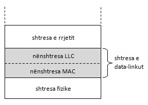
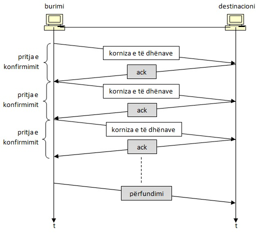
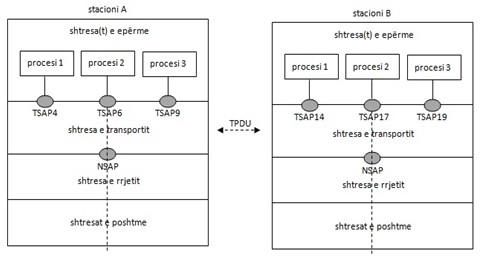

Të dashur nxënës! Para jush keni një material të përmbledhur nga lënda Rrjetat Kompjuterike dhe Komunikime për klasën e katërt profili arsimor Elektroteknik i Kompjuterëve, që do t'ju ndihmoj në nxënien e njohurive teorike nga lëmi i rrjetave kompjuterike.
Përmbledhja e këtij materiali është realizuar për disa vite radhazi duke hulumtuar nga burime të ndryshme, e duke u munduar që përmbajtja e tij të jetë në përputhje me plan-programin zyrtar të përpiluar nga Ministria e Arsimit.
Rrjetat kompjuterike janë lëmi shumë voluminoze, e në këtë material janë përfshirë vetëm një pjesë e vogël e këtyre njohurive, pra, ato tema bazike që duhet t'i përvetësoj tekniku i kompjuterëve pasi të ketë njohuri themelore kompjuterike.
Ky material i përmbledhur nuk është definitiv, posaçërisht kapitujt: Shtresa e rrjetit, Shtresa e transportit dhe Shtresat e epërme, andaj puna nuk mbaron këtu por nevojitet përkushtim edhe më tej për ta përsosur, e mangësitë nga ky material do të mundohemi t'i eliminojmë gjatë realizimit të orëve mësimore, duke u shërbyer edhe me literatura tjera.
Dua të theksoj, se qëllimi i mësimit të kësaj lënde është njoftimi me nocionet themelore, rëndësinë, mënyrën e funksionimit, aplikimin dhe sigurinë e rrjetave dhe komunikimeve kompjuterike, e në kuadër të saj edhe rrjetit të rrjetave, përkatësisht Internetit.
Shpresoj se përmbajtjet e parapara me lehtësi do t’i zotëroni, e detyrat e dhëna praktike dhe teorike do t’i kryeni me sukses!
Autori
Nocionet Themelore – Telekomunikimet
Përmbajtje
Porosia dhe sinjali
Transmetimi serik dhe paralel
Transmetimi asinkron dhe sinkron
Transmetimi asinkron
Transmetimi sinkron
Standardet
Procesi i njohjes së gjendjes të ndonjë sistemi paraqet informacionin apo porosinë. Paraqitja fizike e informacionit quhet sinjal. Sinjali mund të shqyrtohet në domenin kohor dhe në domenin frekuencor. Funksioni i cili e përshkruan përmbajtjen frekuencore të sinjalit quhet spektër i sinjalit.
Me nocionin komunikim nënkuptohet këmbimi i informacioneve në mes dy apo më shumë subjekteve (p.sh. personave dhe/ose kompjuterëve). Për komunikim të suksesshëm është e nevojshme që të gjithë pjesëmarrësit në komunikim të përdorin të njëjtën “gjuhë”. Me termin “gjuhë” nënkuptojmë bashkësinë e simboleve, të cilëve ju është ndarë një domethënie e veçantë. Komunikimi ndërmjet kompjuterëve realizohet me gjuhën e shifrave, më saktësisht me gjuhën, alfabeti i së cilës përbëhet prej dy simboleve: 0 dhe 1.
Bartja e të dhënave ndërmjet pajisjeve realizohet përmes mediumit për bartjen e sinjalit, përkatësisht linjën e komunikimit.
Mediumi paraqet ambientin (mjedisin) nëpër të cilin bëhet bartja e porosisë nga dhënësi, përkatësisht burimi deri tek marrësi, përkatësisht destinacioni.
Modeli themelor i sistemit komunikues
Në raport me kahun e komunikimit, ekzistojnë tri lloje të komunikimeve:
komunikimi simpleks, përkatësisht komunikim në një kah,
komunikimi gjysëm dupleks, përkatësisht komunikim në dy kahe, por jo njëkohësisht dhe
komunikimi dupleks, përkatësisht komunikim në dy kahe njëkohësisht.
Kahu i bartjes së të dhënave: (a) simpleks; (b) gjysëmdupleks; (c) dupleks
POROSIA DHE SINJALI
Porositë mund të jenë kontinuale ose diskrete.
Porositë kontinuale janë të lidhura për sisteme, gjendjet e të cilave janë të definuara në çdo moment kohor gjatë periodës së shqyrtimit dhe të cilat së paku në ndonjë brez kanë pafundësisht shumë gjendje. Brezi i kufizuar ndërmjet vlerave minimale dhe maksimale quhet brez dinamik. Porositë kontinuale paraqiten me sinjale analoge, përkatësisht kontinuale, në formën e funksionit të pandërprerë kohor, p.sh. shtypja, temperatura, zëri, etj.
Porositë diskrete janë të lidhura për sisteme, gjendjet e të cilave definohen në intervale të caktuara kohore. Sinjalet që shërbejnë për bartjen e porosive diskrete mund të paraqiten në formë të impulseve, ku amplituda e impulseve mund të ketë numër të pafundmë të vlerave në brezin e dhënë dinamik. Pra, sinjalet impulsive janë diskrete sipas kohës, ndërsa kontinuale sipas vlerave momentale.
Porositë kontinuale mund të barten edhe me sinjale diskrete nëse plotësohet kushti i teoremës së mostrimit. Kjo teoremë thotë se çdo sinjal kontinual mund të paraqitet në mënyrë unike me numër të fundmë të impulseve ndërmjet vete të larguar, të ashtuquajtura mostra, me kusht që spektri i sinjalit është i kufizuar, ndërsa mostrimi (zgjedhja e mostrave) kryhet me shpejtësi f0 ≥ 2fg, ku fg paraqet frekuencën e epërme kufitare të sinjalit që mostrohet.
Çdo sinjal kontinual që i plotëson kushtet e teoremës së mostrimit, mund të digjitalizohet, ashtu që duhet kryer tri operacione:
mostrimi – diskretizimi i sinjalit sipas kohës,
kuantizimi – diskretizimi i sinjalit sipas vlerave momentale,
kodimi – paraqitja e vlerave të sinjalit të diskretizuar (kuantizuar) me një grup të shifrave, përkatësisht impulseve.
Rast special i sinjalit digjital është sinjali binar, në të cilin të gjitha vlerat momentale diskrete paraqiten me kombinimin e dy shifrave binare – 0 dhe 1.
Transmetimi i porosive, që realizohet ashtu që transmetohen sinjale kontinuale quhet transmetim analog.
Transmetimi i porosive, që realizohet me transmetimin e sinjaleve digjitale quhet transmetim digjital.
Transmetimi digjital është shumë më tepër rezistent ndaj ndikimit të zhurmave se sa transmetimi analog, sepse në vend të përforcimit të sinjalit, bëhet rigjenerimi i tij. Pas rigjenerimit, sinjali praktikisht është i “pastruar” nga zhurma.
Influencë vendimtare në kualitetin e transmetimit digjital ka operacioni i kuantizimit, përkatësisht rrumbullakimi i vlerës momentale të mostrës në vlerën diskrete më të afërt. Në këtë rast futet gabimi i kuantizimit, i cili më nuk mund të eliminohet.
Në rastin e transmetimit digjital, nevojitet brez më i gjerë i lëshimit në krahasim me rastin e transmetimit analog.
TRANSMETIMI SERIK DHE PARALEL
Nëse ndërmjet dhënësit dhe marrësit, transmetimi i të dhënave bëhet nëpër një kanal komunikues, atëherë bitët (fizikisht këto janë sinjale në formë të impulseve) mund të dërgohen në mënyrë sukcesive, njëri pas tjetrit, në këtë rast bëhet fjalë për transmetim serik. Pra, në një takt kohor, përkatësisht në një njësi kohore mund të transmetohet (dërgohet) vetëm një bit.
Në rastin e transmetimit serik, porosia dërgohet në mënyrë sukcesive, bit pas biti nëpër një kanal komunikues
Në rastin e transmetimit paralel, ndërmjet dhënësit dhe marrësit duhet të ekzistojnë n-kanale komunikuese. Kjo mundëson që njëkohësisht, pra, në një takt kohor, të dërgohen n-bitë. Padyshim se transmetimi paralel është n-herë më i shpejtë se transmetimi serik.
Shembull i transmetimit paralel, ku njëkohësisht transmetohen tetë bitë. Transmetimi i paraqitur në këtë figurë, kryhet tetë herë më shpejtë se transmetimi i serik
Brenda kompjuterit, për të arritur shpejtësi më të madhe, përdoret transmetimi paralel. Në telekomunikimet e sotme, e gjithashtu edhe në rastin e komunikimit ndërmjet kompjuterëve, për arsye ekonomike, përdoret transmetimi serik. Duke pasur parasysh këto fakte, në portin hyrës të kompjuterit, duhet kryer konvertimin e transmetimit serik në transmetim paralel, ndërsa në portin dalës, procesin e anasjelltë.
TRANSMETIMI ASINKRON DHE SINKRON
Të shqyrtojmë transmetimin serik të të dhënave. Dhënësi (transmetuesi) mund të filloj të dërgoj të dhëna, vetëm atëherë kur marrësi është i gatshëm t’i pranoj ato. Nëse do të dërgohet vetëm një fjalë binare, me gjatësi të njohur, me marrëveshje ndërmjet dhënësit dhe marrësit për shpejtësinë e transmetimit, atëherë transmetimi do të realizohet pa probleme. Marrësi duhet ta dijë, kur një fjalë binare fillon dhe kur mbaron, në të kundërtën do të vijë deri te pranimi i gabueshëm i të dhënave. Kjo nënkupton se marrësi duhet të jetë i sinkronizuar me dhënësin. Ky problem është zgjidhur me aplikimin e dy mënyrave të transmetimit të të dhënave: transmetimi asinkron dhe sinkron.
Transmetimi asinkron
Gjatë transmetimit asinkron, në grupin e shifrave binare me gjatësi të caktuar, zakonisht në çdo fjalë binare futen bitët shtesë, edhe atë, në fillim të vargut, i ashtuquajturi start-biti dhe në fund të vargut një apo më shumë bita, të ashtuquajtur stop-bit(a).
Zakonisht start-biti është zero logjike (0), ndërsa stop-biti është një logjike (1). Start-biti i lajmëron marrësit se po fillon ardhja e të dhënës, ndërsa stop-biti lajmëron se përfundoj e dhëna.
Gjatë transmetimit asinkron vërehet se rritet numri i bitëve që duhet bartur, prandaj transmetimi i këtillë përdoret në rastin e porosive në intervale të shkurta kohore dhe kur sasia e të dhënave është e vogël. Në periodën kur nuk ka transmetim, tensioni që iu përgjigjet stop-bitit do të jetë tërë kohën i pranishëm në linjë.
Transmetimi sinkron
Në rastin e transmetimit sinkron, bitët e të dhënave barten në mënyrë kontinuale. Problemi se si marrësi ta njoh bitin e parë të fjalës binare, është zgjedhur ashtu që para fillimit të transmetimit, marrësi të vije “në hap” me dhënësin, përkatësisht të sinkronizohet. Kjo realizohet, ashtu që dhënësi tek marrësi disa herë pandërprerë dërgon shenjën për sinkronizim, e cila p.sh. tek kodi ASCII është 10010110.
Transmetimi sinkron përdoret në rastet kur duhet bartur sasi të mëdha të të dhënave, sepse kërkon numër më të vogël të bitëve dirigjues.
STANDARDET
Pajisjet e prodhuesve të ndryshëm të pajimeve kompjuterike dhe telekomunikuese, dallojnë ndërmjet vete sipas konceptit dhe karakteristikave teknike. Me standardizim të pajimeve harduerike dhe softuerike, sigurohet kompatibiliteti i tyre, përkatësisht mundësohet bashkimi dhe lidhja e pajisjeve të prodhuesve të ndryshëm, zvogëlohen shpenzimet e prodhimit, e me këtë zvogëlohet edhe çmimi i pajisjes.
Standardet mund të ndahen në dy grupe:
standarde de fakto dhe
standarde de jure.
Standardet de fakto janë ato standarde te të cilët është arritur pa ndonjë plan formal. P.sh. kompjuteri PC IBM është standard de fakto për kompjuterë të vegjël shtëpiak, sepse disa dhjetëra prodhues tjerë e kopjojnë kompjuterin PC IBM.
Standardet de jure (latinisht: sipas ligjit) janë standarde formale, legale, të cilat i ka miratuar një trup ndërkombëtar i autorizuar për standardizime.
Standardet ndërkombëtare i definon Organizata Ndërkombëtare për Standardizime ISO (International Organization for Standardization).
Në fushën e telekomunikimeve, ISO-ja bashkëpunon me Komitetin për standardizime në fushën e telekomunikimeve të Unionit Ndërkombëtar për Telekomunikacione, të ashtuquajtur Komiteti ITU-T (International Telecommunication Union – Telecommunication Standard Sector).
Në Evropë për standardizime në telekomunikacion janë organizatat ETSI (European Telecommunication Standard Institute) dhe CEPT (Committee of European Post, Telegraph and Telephone), të cilat parashtrojnë propozime në ITU-T dhe në mënyrë aktive marrin pjesë në punimet e saj. Në SHBA rol të ngjashëm ka ANSI (American National Standard Institute).
Rol vendimtar në botën e standardeve ka edhe IEEE (Institute of Electrical and Electronics Engineers). IEEE-ja ka grupin e saj të standardeve e që zhvillon standarde në fushën e inxhinierisë elektrike dhe kompjuterike. Për shembull, standardi IEEE 802 paraqet standardin kyç për rrjeta lokale.
Rrjetat Kompjuterike – Nocionet Themelore
Përmbajtje
Formimi i paketave
Mënyrat themelore për lidhjen e pajisjeve
Klasifikimi i rrjetave kompjuterike
Topologjia e lidhjes së kompjuterëve
Rrjetat prej pike në pikë
Rrjetat difuzive
Ndarja e rrjetave sipas madhësisë
Ndarja e rrjetave sipas raporteve funksionale në mes elementeve të rrjetit
Konfigurimi klient-server
Rrjetat me kompjuterë të njëjtë
Sistemi operativ i rrjetave
Modeli referent OSI
Për kompjuterët themi se komunikojnë, nëse ndërmjet veti mund të këmbejnë të dhëna. Për të komunikuar kompjuterët, nevojitet të lidhen në rrjetë. Me lidhjen e kompjuterëve në rrjetë, mundësohet shfrytëzimi i përbashkët i të gjitha resurseve të pajisjeve të rrjetëzuara: të dhënave, harduerit (p.sh. printeri) dhe softuerit. Rrjeta kompjuterike paraqet grupin e lidhur të kompjuterëve të pavarur, përkatësisht, kompjuterëve të cilët munden në mënyrë të pavarur të realizojnë përpunimin, por të cilët sipas nevojës mund t’i përdorin resurset e pajisjeve tjera në rrjetë.
Rrjeta përbëhet nga bashkësia e pajisjeve të lidhura me linqe. Pajisjet e rrjetëzuara, pa marrë parasysh a gjenden në brendi të rrjetës apo në skajet e saj (pajisjet fundore, përkatësisht, kompjuterët e shfrytëzuesve), quhen nyje. Linku paraqet linjën komunikuese, e cila drejtpërsëdrejti i lidh dy nyje fqinje. Nyejt e brendshme quhen mesnyje. Këto janë pajisje të rrjetit, si: rigjeneratorë, ura, ruterë. Për kompjuterin e shfrytëzuesit përdoren edhe këto emërtime: stacion, host, kompjuter amë ose DTE (Data Terminal Equipment – pajisje e cila gjeneron dhe/ose përdor të dhëna digjitale). Linja komunikuese e cila i lidh dy nyje të skajshme, përkatësisht dhënësin dhe marrësin, quhet shteg. Në rrjetat kompjuterike, për stacionin që dërgon të dhëna, zakonisht përdoret termi burim, ndërsa për stacionin që pranon të dhëna, përdoret termi destinacion.
Elementet e rrjetit: nyja e skajshme, mesnyja, linku dhe shtegu
Kompjuteri manipulon me të dhëna ashtu siç e dikton programi. Të dhënat ndahen në njësi të dhënash, të cilat varësisht nga vendi dhe mënyra e përpunimit, ruajtja dhe bartja, mund të jenë të ndryshme. Njësia më e madhe e të dhënave është porosia. Porosia paraqet një informacion të plotë, p.sh. një fajll me të dhëna. Njësia më e vogël e të dhënave është biti.
Për të komunikuar dy kompjuterë, nuk mjafton vetëm të lidhen me një medium komunikues; nevojitet që të dy kompjuterët “të flasin” gjuhën e njëjtë. Ata duhet të akordohen se si të zhvillohet komunikimi: me çfarë shpejtësie, cili lloj kodimi të përdoret, çfarë të ndërmerret nëse gjatë transmetimit paraqiten gabime, etj. Bashkësia e rregullave që dirigjon transmetimin e të dhënave quhet protokoll. Pra, që të mund të komunikojnë dy kompjuterë ndërmjet vete, është e domosdoshme:
të jenë të lidhur me linjë komunikuese,
të ekzistoj protokoll i caktuar, pra, marrëveshje e ndërsjellët me cilat rregulla do të realizohet komunikimi.
FORMIMI I PAKETAVE
Porositë që i këmbejnë kompjuterët mund të jenë të gjatësive të ndryshme, prej disa bitë deri në disa milion bitë. Gjatë transmetimit mund të vije deri te ndonjë gabim. Në komunikimet kompjuterike, kur në marrje vërtetohet se në porosinë e pranuar ekziston gabimi, nga burimi kërkohet që përsëri ta dërgoj porosinë e tillë. Për këtë arsye, burimi duhet që porosinë e dërguar ta ruaj në memorien amë, të ashtuquajtur bafer, deri sa nga destinacioni nuk e merr konfirmimin se porosia ka arritur pa gabime. Gjithashtu edhe në destinacion ekziston baferi në të cilin ruhet porosia e pranuar. Meqenëse gjatësia e porosisë (përkatësisht numri i bitëve në porosi) është e pakufizuar, është e pamundur të projektohet bafer i cili me një siguri të plotë do të mund të pranonte çdo porosi. Nga ana tjetër, ndërtimi i baferit me kapacitet të madh memorues do të ishte jashtëzakonisht joekonomik, sepse shumë shpesh baferi do të ishte gati plotësisht i zbrazët.
Për këtë arsye, në procesin e komunikimit, porosia në emitim (burim) ndahet në pjesë më të vogla, të ashtuquajtura paketa të të dhënave, për t’u siguruar transmetim më ekonomik. Në destinacion paketat e arritura përsëri rikuperohen (bashkohen) në porosi të plotë. Në këtë mënyrë në rrjetat kompjuterike zhvillohet komunikacioni paketor. Madhësia maksimale e paketave varet nga lloji i rrjetës në të cilën realizohet transmetimi.
Përparësitë e komunikacionit paketor janë:
Meqenëse gjatësia maksimale e paketave është e kufizuar, lehtë mund të projektohet madhësia e baferit në nyjet e rrjetit.
Kur në destinacion konfirmohet gabimi në transmetim, burimi nuk e riemiton porosinë e plotë, por vetëm paketën në të cilën është hasur gabimi. Në këtë mënyrë, dukshëm zvogëlohet numri i bitëve që duhet përsëri të dërgohen.
Porosia e gjatë “do të bllokonte” për një kohë të gjatë një apo më shumë linja komunikuese në rrjetë dhe në këtë mënyrë do të pamundësonte që në këtë shteg të barten edhe porosi tjera. Me ndarjen e porosisë në paketa, mundësohet qasja e barabartë në rrjetë e të gjithë të interesuarve.
Përparësitë e komunikacionit paketor e kanë edhe çmimin e vet:
E metë është se rritet numri i përgjithshëm i bitëve që duhet bartur. Çdo paketë duhet përveç bitëve të porosisë, të përmbaj edhe një varg të informacioneve shtesë (p.sh. adresën e burimit dhe destinacionit, numrin rendor të paketës, a bëhet fjalë për paketën e fundit të porosisë, a ka paketa prioritet dhe me çfarë shkalle, etj.). Të gjitha këto informacione vendosen në të ashtuquajturën koka e paketës (ang.: header). Për këtë arsye paketa ndahet në dy pjesë: koka dhe fusha e të dhënave. Pasi koka përmban një varg të informacioneve dirigjuese, gjithashtu përmban edhe numër të caktuar të nënfushave, të cilat në rastin e përgjithshëm kanë gjatësi të ndryshme.
Komunikacioni paketor kërkon që në nyje të kryhen më shumë detyra: në emetim, ndarja e porosisë në paketa dhe në marrje, rikombinimi i paketave në porosi, emetim dhe pranim i numrit më të madh të njësive individuale, etj.
Struktura e përgjithshme e paketit të të dhënave
MËNYRAT THEMELORE PËR LIDHJEN E PAJISJEVE
Të shqyrtojmë rastin kur duhet lidhur kompjuterin me terminalet e tij. Lidhjen mund ta realizojmë në dy mënyra:
Lidhjen e tipit pikë-pikë (ang.: point-to-point link);
Lidhjen shumëpikësh (ang.: multipoint link ose multidrop link).
Kompjuterin me periferitë e tij që gjenden afër, zakonisht i lidhim me tipin pikë-pikë.
Lidhja e tipit pikë-pikë, në rastin: (a) kompjuter – një terminal dhe (b) kompjuter – më shumë terminaleLidhja shumëpikësh e kompjuterit me terminalet në largësi
Për lidhjen e N-terminaleve, kompjuteri duhet t’i ketë N-porte. Nëse terminalet gjeografikisht gjenden në largësi nga kompjuteri, më racionale është përdorimi i lidhjes shumëpikëshe.
KLASIFIKIMI I RRJETAVE KOMPJUTERIKE
Rrjetat kompjuterike mund të klasifikohen sipas karakteristikave të ndryshme: topologjisë, madhësisë, mënyrës së lidhjes, teknologjisë harduerike që përdoret për lidhjen e kompjuterëve, raporteve funksionale që ekzistojnë ndërmjet elementeve të ndryshme të rrjetit, protokollit komunikues që përdoret në rrjetë, etj.
TOPOLOGJIA E LIDHJES SË KOMPJUTERËVE
Mënyra se si disa kompjuter lidhen në mes vete quhet topologji e lidhjes.
Rrjetat telekomunikuese mund të ndahen në dy grupe themelore:
rrjetat difuzive (ang.: broadcast networks) dhe
rrjetat prej pike në pikë (ang.: point-to-point networks).
Rrjetat difuzive kryesisht mbulojnë sipërfaqe të vogla. Rrjetat, që mbulojnë sipërfaqe më të mëdha, më së shpeshti ndërtohen si rrjeta prej pike në pikë.
Rrjetat prej pike në pikë
Rrjetat prej pike në pikë mund të jenë rrjeta jokomutuese dhe komutuese.
Rrjetat jokomutuese janë ato rrjeta te të cilat ekziston lidhje e përhershme në mes të gjitha stacioneve të lidhura në atë rrjetë. Andaj, në këto rrjeta nuk ekzistojnë mesnyjet.
Rrjetat komutuese përmbajnë shumë lidhje ndërmjet stacioneve të ndryshme, prandaj, të dhënat nga burimi deri në destinacion barten nëpërmjet një vargu të mesnyjeve të cilat quhen komutator (ang. switches). Komutatori është sistem harduerik dhe/ose softuerik, i cili mundëson komunikimin e përkohshëm në mes dy apo më shumë pajisjeve të cilat nuk janë të lidhur drejtpërdrejt ndërmjet veti, por janë të lidhur përmes komutatorit. Rrjetat komutuese ndahen në rrjeta me komutim të qarkut (rrjeta e telefonisë klasike) dhe në rrjeta me komutim të porosive, përkatësisht me komutim të paketave (rrjetat kompjuterike).
Rrjetat difuzive
Karakteristika themelore e rrjetave difuzive është ekzistimi i vetëm një kanali komunikues të cilin e përdorin të gjithë kompjuterët në rrjetë. Andaj, porositë që i dërgon një kompjuter arrin te të gjithë kompjuterët në rrjetë. Me marrjen e porosisë, çdo stacion verifikon adresën e destinimit dhe nëse ajo porosi ju dedikohet ndonjë stacioni tjetër, ai nuk do ta pranoj.
Në rrjetat difuzive mundësohen tri mënyra të dërgimit të porosive:
stacioni stacionit (unicasting),
stacioni një grupi të stacioneve (multicasting) dhe
stacioni të gjithë stacioneve tjerë në rrjetë (broadcasting).
Topologjitë themelore difuzive janë:
topologjia në formë të magjistrales (ang.: bus topology),
topologjia në formë të yllit (ang.: star topology) dhe
topologjia në formë të unazës (ang.: ring topology).
Topologjia në formë të magjistrales. Kjo topologji paraqet rrjetë në shumë pika, në të cilën të gjithë stacionet janë të lidhura me kabllo koaksiale, të ashtuquajtur magjistrale, që do të thotë se të gjithë pajisjet e rrjetëzuara e ndajnë kanalin komunikues.
Topologjia në formë të magjistrales
Në skajet e magjistrales gjenden pikat fundore (terminatorët) me të cilët absorbohet sinjali dhe në këtë mënyrë pamundësohet reflektimi i tij.
Rrjetat në formë të magjistrales lehtë instalohen, nevojitet sasi e vogël në krahasim me topologjitë me lidhje të plotë, ndërsa çdo stacioni ju nevojitet një port hyrës-dalës.
Dobësitë e kësaj topologjie janë: nëse në cilindo vend të magjistrales vije deri te ndërprerja, i tërë rrjeti nuk funksionon; gjatë përhapjes së sinjalit nëpër magjistrale, ai dobësohet, sepse një pjesë e energjisë së tij shndërrohet në nxehtësi.
Topologjia në formë të yllit. Në këtë topologji të gjitha stacionet janë të lidhur në përmbledhësen qendrore, të ashtuquajtur hab (ang.: hub).
Topologjia në formë të yllit
Stacioni i cili donë t’i dërgoj porosi një stacioni tjetër, porosinë e përcjell në hab, ndërsa habi e ritransmeton në të gjitha linjat dalëse.
Përparësi e kësaj topologjie është: nëse vije deri te ndërprerja e një linje, do të “bie” nga rrjeti vetëm stacioni i lidhur në atë linjë, ndërsa pjesa tjetër e rrjetit do të funksionoj në mënyrë normale.
Topologjia në formë të unazës. Në rastin e kësaj topologjie, rrjeta përbëhet nga një grup i regjeneratorëve, të lidhur në atë formë, ashtu që formojnë rrjetë të mbyllur. Çdo stacion është i lidhur në rrjetë përmes regjeneratorit të tij.
Topologjia në formë të unazës
Regjeneratori është pajisje harduerike i cili në njërën linjë i pranon të dhënat, ndërsa në linjën tjetër, pas regjenerimit menjëherë i dërgon bit pas biti me të njëjtën shpejtësi që i ka pranuar, por duke vendosur një vonesë. Në këtë konfigurim çdo regjeneratorë, përveç se paraqet element aktiv të unazës, shërben edhe si interfejs, përkatësisht si pikë lidhëse e stacionit në rrjetë.
Transmetimi në topologjinë unazë zhvillohet vetëm në një kahje. Çdo stacion afër të cilit kalojnë paketat, verifikon adresën e destinimit të tyre dhe nëse vërteton se ndonjë paketë ju është dërguar atij e kopjon përmbajtjen e atij paketi, ndërsa paketi vazhdon të qarkulloj përgjatë unazës. Largimi i paketit nga unaza bëhet nga stacioni që e ka dërguar atë, pasi ta bëjë një qark në unazë.
Nëse në topologjinë në formë të unazës vije deri te ndërprerja e një linku apo deri te defekti i ndonjë regjeneratori, i tërë rrjeti nuk do të funksionoj.
NDARJA E RRJETAVE SIPAS MADHËSISË
Në varshmëri nga hapësira të cilën e mbulojnë, rrjetat kompjuterike sipas një ndarjeje themelore mund të klasifikohen në:
rrjeta lokale ose LAN (ang.: Local Area Network),
rrjeta e qytetit ose MAN (ang.: Metropolitan Area Network),
rrjeta regjionale ose WAN (ang.: Wide Area Network).
Definicioni i zakonshëm i rrjetave lokale është se kjo rrjetë mbulon një zonë të vogël, rrezja e së cilës nuk është më e madhe se disa kilometra. LAN-i i lidh kompjuterët dhe stacionet punuese me tela dhe pa tela (WLAN – Wireless LAN) në kuadër të ndonjë objekti apo grupi të objekteve të afërta. Për shkak të rrezes së vogël, shpejtësia e punës është dukshëm më e madhe se në rastin e rrjetave WAN dhe arrin shpejtësi deri në 100 Gbit/s. Rrjetat LAN në parim janë rrjeta difuzive.
Rrjeta MAN zakonisht lidh disa rrjeta lokale në ndonjë qytet, që nënkupton se mbulon sipërfaqen e përafërt me një qytet.
Rrjeta WAN mbulon një zonë të madhe gjeografike, si p.sh. një shtet ose ndërlidh një shtet me një tjetër apo edhe një kontinent me një kontinent tjetër. Në këto rrjeta shpesh shfrytëzohen pajisjet dhe shërbimet e kompanive telekomunikuese. Shpejtësi më të madhe të transmetimit në parim arrihen mes provajderëve të mëdhenj, dhe kjo shpejtësi ditët e sodit arrin deri në 40 Gbit/s.
Ekziston edhe ndarje më e detajizuar e rrjetave sipas madhësisë:
rrjeta personale ose PAN (ang.: Personal Area Network),
rrjeta CAN (ang.: Campus Area Network),
rrjeta globale ose GAN (ang.: Global Area Network).
NDARJA E RRJETAVE SIPAS RAPORTEVE FUNKSIONALE NË MES ELEMENTEVE TË RRJETIT
Dy konfigurime themelore të rrjetave kompjuterike janë:
rrjeta klient-server dhe
rrjeta me kompjuterë të njëjtë (rrjeta peer-to-peer).
Konfigurimi klient-server
Sistemi i këtillë përbëhet prej disa klientëve dhe një apo më shumë serverëve. Klient mund të jetë një kompjuter apo një program. Server, gjithashtu mund të jetë një kompjuter apo një program. Serveri i ka dy detyra kryesore:
t’i ofroj shërbime klient-kompjuterëve apo klient-programeve dhe
të mbikëqyr funksionimin e rrjetit.
Me kërkesën e klientit, serveri i kryen punët të cilat klienti nuk mund t’i realizoj, për shkak të fuqisë së pamjaftueshme të procesorit ose mungesës së hapësirës memoruese.
Komunikimi zhvillohet ashtu që klienti i dërgon serverit kërkesën që ai ta kryej ndonjë punë. Kur serveri pranon kërkesën e klientit, e kryen detyrën e dhënë dhe përgjigjen ia dërgon përsëri klientit. Pra, klienti është ai i cili gjithmonë i pari e inicion dialogun.
Varësisht nga funksioni të cilin e kryejnë, serverët ndahen në fajll-serverë, serverë për baza të të dhënave dhe serverë me qëllim special në të cilët, përveç tjerash bëjnë pjesë edhe serverët për qasje dhe serverët për printim.
Modeli klient-server
Rrjetat me kompjuterë të njëjtë
Rrjetat me kompjuterë të njëjtë (ang.: peer-to-peer networks) quhen ato rrjeta kompjuterike te të cilat të gjitha pajisjet janë të njëjta për nga përgjegjësia: çdo kompjuter mundet në mënyrë të pavarur t’i kryej detyrat, por i mundëson edhe kompjuterëve tjerë në rrjetë që t’i shfrytëzojnë resurset e tij, e gjithashtu edhe vet mund t’i shfrytëzoj resurset e kompjuterëve tjerë në rrjetë. Me fjalë tjera, në këtë lloj rrjete nuk ekzistojnë serverë të cilët do ta dirigjonin rrjetën dhe do të përmbajnë resurse që i nevojiten klientëve, por çdo kompjuterë në rrjetë mund të funksionoj edhe si klient edhe si server.
SISTEMI OPERATIV I RRJETAVE
Që kompjuterët të mund të komunikojnë në mes vete, nuk mjafton që vetëm të lidhen fizikisht përmes mediumit të caktuar, por, duhet definuar edhe një varg rregullash të cilat do të rregullonin procesin e këmbimit të të dhënave. Këto rregulla mund të paraqiten në formë të programit. Bashkësia e të gjitha programeve që mundësojnë komunikimin e kompjuterëve paraqet sistemin operativ të rrjetit.
Detyra e sistemit operativ të rrjetit është lidhja e të gjithë kompjuterëve dhe pajisjeve periferike dhe kësisoj të mundësoj që kompjuterët në rrjetë t’i ndajnë, përkatësisht t’i përdorin resurset e rrjetit (fajllat, njësitë dalëse, etj.).
Sisteme operative të rrjetit më të njohur janë: Windows Server 2003, Windows Server 2008, etj.
MODELI REFERENT OSI
Organizata ndërkombëtare për standardizime ISO në vitin 1984 ka definuar standardin e njohur me emrin modeli referent OSI (Open System Interconnection – sistem i hapur i ndërlidhjes). Quhet “sistem i hapur” sepse nuk kërkon modifikime në harduer dhe në softuer të sistemeve që komunikojnë, pa marrë parasysh se sa mund të dallojnë ndërmjet vete. Duhet cekur se modeli referent OSI nuk është protokoll, por model i cili ka për qëllim të lehtësoj kuptimin dhe projektimin e arkitekturës së rrjetit.
Modeli referent OSI përbëhet prej shtatë shtresave (niveleve) nëpër të cilat duhet të kalojnë të dhënat, në rrugën e tyrë prej burimit deri në destinacion, e ato janë:
Shtresa fizike (ang.: physical layer), përkatësisht shtresa e parë,
Shtresa e lidhjes (ang.: data link layer), përkatësisht shtresa e dytë,
Shtresa e rrjetit (ang.: network layer), përkatësisht shtresa e tretë,
Shtresa e transportit (ang.: transport layer), përkatësisht shtresa e katërt,
Shtresa e sesionit (ang.: session layer), përkatësisht shtresa e pestë,
Shtresa e prezantimit (ang.: presentation layer), përkatësisht shtresa e gjashtë,
Shtresa e aplikacioni (ang.: application layer), përkatësisht shtresa e shtatë.
Shtresa e aplikacionit (shtresa e 7-të)
Shtresa e prezantimit (shtresa e 6-të)
Shtresa e sesionit (shtresa e 5-të)
Shtresa e transportit (shtresa e 4-të)
Shtresa e rrjetit (shtresa e 3-të)
Shtresa e lidhjes (shtresa e 2-të)
Shtresa fizike (shtresa e 1-rë)
Modeli referent OSI
Bashkësia e shtresave dhe protokolleve paraqet arkitekturën e rrjetit. Specifikimi i arkitekturës së rrjetit duhet të përmbaj informacione që janë të domosdoshme ashtu që për çdo shtresë të mund të ndërtohet hardueri përkatës si dhe të shkruhet programi me ndihmën e të cilit do të realizohet protokolli i caktuar.
Parimi themelor i strukturës shtresore është: çdo shtresë është e pavarur nga shtresa nën atë. Çdo shtresë i siguron shërbime shtresës mbi atë. Shërbimi ose servisi është bashkësi e operacioneve që i kryen shtresa në shqyrtim për shtresën mbi atë.
Në modelin OSI themelore janë tri koncepte:
koncepti i shërbimit (service): shërbimi tregon çka bënë shtresa,
koncepti i protokollit: protokolli tregon si funksionon shtresa dhe
koncepti i interfejsit: interfejsi i thotë proceseve/programeve përmbi si t’i pranojnë shërbimet.
Pas njohjes me modelin OSI mund të japim një definicion më preciz për rrjetat lokale dhe rrjetat regjionale:
çdo rrjetë kompjuterike që punon në dy shtresat e poshtme të modelit OSI (në shtresën fizike dhe në shtresën e lidhjes) paraqet rrjetë lokale – LAN.
çdo rrjetë kompjuterike që punon në tri shtresat e poshtme të modelit OSI (në shtresën fizike, të lidhjes dhe të rrjetit) paraqet rrjetë regjionale – WAN.
Mediumet për Transmetim të Sinjaleve
Përmbajtje
Mediumet me VEM të kanalizuar
Çiftorja e përdredhur
Kabllo koaksial
Fibra optike
Mediumet me VEM të pakanalizuar
Telefonia mobile
Transmetimi i multipleksuar
Multipleksimi frekuencor
Multipleksimi kohor
Mediumi paraqet mjedisin (ambientin) nëpër të cilin transmetohen porositë, pa marrë parasysh a bëhet fjalë për sinjale të të folurit, fotografisë apo të dhënave tjera, edhe atë me valë elektromagnetike (VEM) të kanalizuar dhe të pakanalizuar nga burimi i informacionit (burimi) deri tek shfrytëzuesi i informacionit (destinacioni). Në telekomunikime, e me këtë edhe në rrjetat kompjuterike mund të përdoren mediume të ndryshme. Çdonjëri prej tyre ka veçoritë e tij specifike: gjerësinë e brezit lëshues, shpejtësinë e përhapjes së sinjalit, shpejtësinë e transmetimit të të dhënave, vonesat, çmimin, sa lehtë instalohen dhe mirëmbahen, etj.
Shpejtësia e përhapjes së sinjalit paraqet distancën që e kalon ndonjë sinjal elementar në njësi të kohës.
Shpejtësia e transmetimit të të dhënave ose rrjedha paraqet numrin e sinjaleve elementare të cilët në njësinë e kohës kalojnë nëpër ndonjë pikë në linjën komunikuese. Shpejtësia e transmetimit varet nga aftësia lëshuese (kapaciteti) e kanalit, e zakonisht shprehet me numër të bitëve në sekondë (b/s).
Aftësia lëshuese, përkatësisht kapaciteti i kanalit paraqet rrjedhën maksimale të mundshme nëpër kanal, ndërsa gjatë rrjedhës impulset e transmetuar nuk pësojnë deformime, ku do të pamundësohej njohja e tyre në marrje.
MEDIUMET ME VEM TË KANALIZUAR
Sot kryesisht përdoren tri lloje të mediumeve me VEM të kanalizuar:
Çiftorja e përdredhur,
Kabllo koaksial dhe
Fibra optike.
Çiftorja e përdredhur dhe kabllo koaksial përdorin përçues metalik (të bakrit) nëpër të cilët barten (transmetohen) sinjalet në formë të rrymës elektrike. Fibra optike është fije e hollë nga xhami ose plastika, nëpër të cilën barten sinjalet në formë të dritës.
Karakteristikat e mediumeve me VEM të kanalizuar gjatë transmetimit pikë-pikë
Mediumi transmetues
Shpejtësia maksimale e transmetimit
Gjerësia e brezit lëshues
Distanca ndërmjet regjeneratorëve
Çiftorja e përdredhur
4 Mb/s
100 Hz – 5 MHz
2 – 10 km
Kabllo koaksial
500 Mb/s
100 kHz – 500 MHz
1 – 10 km
Fibra optike
2 Gb/s
2 GHz
10 – 100 km
ÇIFTORJA E PËRDREDHUR
Medium më i vjetër transmetues por edhe më tej më i përdorur është çiftorja e përdredhur. Përbëhet prej dy telave të izoluar, e të përdredhur në spirale nga materiali i bakrit me trashësi rreth 1 mm. Me përdredhjen e telave në çiftore, arrihet zvogëlimi i interferencës elektrike me çiftoret tjera.
Çiftoret e përdredhura mund të përdoren për transmetimin e sinjaleve analoge dhe digjitale. Gjerësia e brezit lëshues të çiftores së përdredhur varet nga trashësia e telit dhe gjatësia e trasës. Në rastin e transmetimit analog pikë-pikë, gjerësia e brezit të çiftores së përdredhur është rreth 250 kHz. Kur bëhet fjalë për transmetimin digjital pikë-pikë mund të arrihen shpejtësi deri në disa Mb/s por në distanca të shkurta.
Ekzistojnë dy lloje të çiftoreve të përdredhura:
Çiftorja e përdredhur e pambrojtur ose UTP (Unshielded Twisted Pair) dhe
Çiftorja e përdredhur e mbrojtur ose STP (Shielded Twisted Pair).
Çiftorja UTP. Këto çiftore janë të standardizuara sipas kualitetit në disa kategori. Çdo kategori është e përshtatshme për fusha të caktuara të aplikimit:
Kategoria 1 – përdoret në telefoni. Është e përshtatshme për transmetimin e sinjaleve të të folurit dhe të dhënave me shpejtësi të vogël.
Kategoria 2 – është e përshtatshme për transmetimin e sinjaleve telefonike dhe të dhënave me shpejtësi deri në 4 Mb/s.
Kategoria 3 – shërben për transmetimin e sinjaleve të të dhënave me shpejtësi deri në 10 Mb/s.
Kategoria 4 – mundëson transmetim të sinjaleve të të dhënave me shpejtësi deri në 16 Mb/s.
Kategoria 5 – mundëson transmetim të sinjaleve të të dhënave me shpejtësi deri në 100 Mb/s.
Kategoria 6 – mundëson transmetim të sinjaleve të të dhënave me shpejtësi deri në 10 Gb/s.
Çiftoret UTP të kategorive më të larta përdoren në rrjetat lokale (LAN). Lidhja e çiftoreve UTP me pajisjet e rrjetit bëhet përmes konektorëve UTP.
Konektorët dhe çiftorja UTP
KABLLO KOAKSIAL
Konstruksioni i kabllos koaksiale tërësisht dallon nga konstruksioni i çiftores së përdredhur, andaj mundëson transmetim në distanca më të mëdha dhe me shpejtësi më të madhe. Përbëhet prej katër elementeve: bërthamës së bakrit, materialit izolues që mbulon bërthamën, përçuesit të jashtëm cilindrik (të rrjetëzuar) dhe mbështjellësit mbrojtës nga plastika.
Kabllo koaksial
Aplikim të gjerë kanë dy tipa të kabllove koaksiale: kabllo 50-omësh dhe kabllo 75-omësh.
Kabllo 50-omësh kryesisht përdoret për transmetim analog, andaj shpesh quhet edhe kabllo koaksial brezngushtë (ang.: baseband coaxial cable). Në kabllon koaksial brezngushtë me gjatësi 1 km mund të realizohet shpejtësia e transmetimit prej 1 Gb/s deri në 2 Gb/s.
Kabllo 75-omësh kryesisht përdoret për transmetim digjital, andaj shpesh quhet edhe kabllo koaksial brezgjerë (ang.: broadband coaxial cable). Kabllot koaksial brezgjerë përdoren në teknikën standarde të televizionit kabllor, prandaj këto kabllo punojnë në frekuenca deri në 450 MHz dhe mund të jenë të gjatë deri në 100 km.
FIBRA OPTIKE
Fibra optike është përçues i hollë (prej 2 μm deri në 125 μm), fleksibil, i aftë për të transmetuar rrezet e dritës. Për ndërtimin e fibrave optike përdoren lloje të ndryshme të xhamit dhe plastikës. Fibra e plastikës është më e lirë dhe mund të përdoret në linja komunikuese të shkurta, tek të cilat janë të pranueshme humbjet në vlera më të mëdha.
Kabllo optik ka formën cilindrike dhe përbëhet prej tri elementeve të koncentruar: bërthamës, mbështjellësit të bërthamës dhe mbështjellësit të jashtëm. Bërthama është element i brendshëm dhe përbëhet prej një apo më shumë fijeve të holla të xhamit apo plastikës. Çdo fije është e rrethuar me mbështjellësin e saj, i cili gjithashtu është i ndërtuar nga xhami apo plastika, por me indeks të thyerjes së dritës më të vogël se bërthama. Mbështjellësi i jashtëm është i ndërtuar nga plastika ose nga ndonjë material tjetër dhe shërben për mbrojtjen e fibrave nga lagështia, thyerja dhe nga rreziqet tjera.
Sinjali digjital i informacionit para transmetimit nëpër fibrën optike, shndërrohet në sinjal të dritës në formën e vargut të impulseve të dritës, që i përgjigjen shifrave binare 0 dhe 1.
Kabllo me fibra optike
Ekzistojnë dy mënyra të përhapjes së dritës nëpër fibrën optike:
përhapja monomode dhe
përhapja multimode.
Përhapja monomode shfaqet atëherë kur diametri i fibrës është i rendit të gjatësisë valore të rrezes së dritës: atëherë nëpër fibër mund të kaloj vetëm rrezja aksiale (rreze e cila bije vetëm nën një kënd ose, siç thuhet, që është në një mod). Pasi në këtë rast rrezet përhapen paralelisht me boshtin gjatësor të fibrës, rrugëtimi i rrezeve nëpër fibër është gati identik, me ç’rast të gjitha rrezet arrin njëkohësisht në destinacion. Është e qart se për përhapjen monomode nevojitet burim jashtëzakonisht i fokusuar i dritës, i cili rigorozisht kufizon shpërbërjen e rrezes.
Në rastin e transmetimit multimod, rrezet e dritës nëpër fibër kalojnë në rrugë të ndryshme.
Rrugëtimet e rrezeve nëpër fibrën optike në rastin e transmetimit multimod
Kështu rrezja në shumë “hapa” kalon nëpër fibrën optike, ku rrezja me kënd më të vogël rënës kalon rrugë më të gjatë (sepse bënë më shumë hapa) se rrezja, këndi rënës i së cilës është më i madh. Prandaj rrezet e emetuara në një interval kohor arrin në destinacion në intervale të ndryshme kohore, ku sinjali rezultant fitohet me rekombinimin e rrezeve të arritura.
Si burime të rrezeve të dritës përdoren:
dioda LED (angl.: Light Emitting Diode),
dioda laserike injektuese ose ILD (angl.: Injection Laser Diode) dhe
laseri.
Në dy rastet e para bëhet fjalë për elemente gjysëmpërçuese të cilët emetojnë dritë kur të sjellët tensioni në ato.
Dioda LED është e lirë, punon në brez të lart të temperaturës dhe ka jetëgjatësi më të madhe, por emeton dritë jo mjaftë të fokusuar, andaj përdoret gjatë transmetimit në distanca të shkurta.
ILD është më efikase dhe mundëson transmetim më të shpejt të të dhënave.
Laseri mundëson fokusim jashtëzakonisht të madh të rrezes së dritës, andaj mund të korrigjohet këndi i rënies së rrezes. Për shkak të drejtimit të jashtzakonshëm dhe fuqisë së lartë, sinjalet laserike i mbajnë karakteristikat e tyre edhe në distanca të mëdha.
Në marrje si detektor përdoren dy lloje të fotodiodave , të cilat shndërrojnë dritën në energji elektrike: detektori PIN, më i lirë dhe me ndjeshmëri më të vogël dhe detektori më kualitativ APD.
Fibra optike ka disa përparësi në krahasim me kabllon koaksiale dhe çiftoren e përdredhur:
brez më të gjerë lëshues,
përmasa dhe peshë më të vogël,
dobësim më të vogël,
rezistent ndaj pengesave (ndërhyrjeve),
mundësi të vogël të përgjimit.
Të metat e fibrave optike janë:
çmimi i lartë,
mekanikisht të dobëta (të thyeshme),
instalimi më i vështirë.
MEDIUMET ME VEM TË PAKANALIZUAR
Kur bëhet fjalë për transmetimin e sinjaleve përmes mediumeve me valë elektromagnetike (VEM) të pakanalizuar, nënkuptojmë komunikimin pa tela ose radio komunikimin. Spektri elektromagnetik që përdoret tek radio komunikimet është i ndarë në tetë breze saktësisht të definuar (tabela e mëposhtme).
Sipas mënyrës se si radio-valët arrin prej dhënësit deri tek marrësi, dallojmë katër tipa të valëve:
valët sipërfaqësore,
valët troposferike,
valët jonosferike dhe
valët direkte.
Radio-valët sipërfaqësore përhapen nëpër shtresat më të ulëta të atmosferës, duke përshkruar lakoren e sipërfaqes së Tokës, por gjithashtu mund të përhapen edhe nëpër ujë. Sinjalet përhapen nga antena emetuese në të gjitha drejtimet, ndërsa intensiteti i fushës në vendin e marrjes varet nga përçueshmëria dhe konstanta dielektrike e terrenit, si dhe nga frekuenca e punës.
Valët troposferike mund të përhapen në dy mënyra: direkt në vijë të drejtë nga antena dhënëse deri tek ajo marrëse, apo mund të emitohen nën një kënd në shtresat e epërme të troposferës, prej nga reflektohen përsëri në sipërfaqen e Tokës.
Valët jonosferike kanë një domethënie të posaçme në radiofoni. Radio-valët e frekuencave të larta emitohen në drejtim të jonosferës, prej nga reflektohen përsëri kah Toka dhe në këtë mënyrë mundësojnë transmetimin e sinjaleve në distanca të mëdha, edhe atë me një fuqi të vogël emetuese.
Valët direkte janë sinjale me frekuenca shumë të larta të cilat transmetohen në vijë të drejtë nga antena dhënëse tek ajo marrëse (antenat duhen të jenë optikisht të dukshme në mes vete). Valët direkte kozmike përdorin satelitët si rele dhe në këtë mënyrë mbulojnë me radio-sinjale sipërfaqe të mëdha në Tokë.
Brezet komunikuese në rastin e VEM të pakanalizuara
TË DHËNAT ANALOGE
TË DHËNAT DIGJITALE
Brezi i fekuencave
Emërtimi
Modulimi
Gjerësia e brezit
Modulimi
Shpejtësia e transmetimit
Aplikimi kryesor
3 – 30 kHz
VLF
në përgjithësi nuk përdoret
navigacioni dhe komunikimi nëndetar
30 – 300 kHz
LF
në përgjithësi nuk përdoret
ASK, FSK, MSK
0,1 – 100 b/s
navigacioni
300 – 3000 kHz
MF
AM
deri në 4 kHz
ASK, FSK, MSK
10 – 1000 b/s
radio komercial AM
3 – 30 MHz
HF
AM, SSB
deri në 4 kHz
ASK, FSK, MSK
10 – 3000 b/s
radio valëshkurtër; radio CB
30 – 300 MHz
VHF
AM, SSB, FM
5 kHz – 5 MHz
FSK, PSK
deri në 100 kb/s
televizioni VHF; radio FM
300 – 3000 MHz
UHF
FM, SSB
deri në 20 MHz
PSK
deri në 10 Mb/s
televizioni UHF; mikrovalët tokësore
3 – 30 GHz
SHF
FM
deri në 500 MHz
PSK
deri në 100 Mb/s
mikrovalët tokësore; mikrovalët satelitore
30 – 300 GHz
EHF
FM
deri në 1 GHz
PSK
deri në 750 Mb/s
Lidhjet eksperimentale pikë – pikë
VLF – very low frequency (frekuencë shumë e ultë); LF – low frequency (frekuencë e ultë); MF – medium frequency (frekuencë e mesme); HF – high frequency (frekuencë e lartë); VHF – very high frequency (frekuencë shumë e lartë); UHF – ultra high frequency (frekuencë ultra e lartë); SHF – super high frequency (frekuencë super e lartë); EHF – extremely high frequency (frekuencë jashtëzakonisht e lartë).AM – amplitude modulation (modulim amplitudor); FM – frequency modulation (modulim frekuencor); SSB – single-sideband modulation (modulim me një brez anësor); ASK – amplitude-shift keying (modulimi digjital i amplitudës); FSK – frequency-shift keying (modulimi digjital i frekuencës); MSK – minimum-shift keying (modulimi minimal digjital); PSK – phase-shift keying (modulimi digjital i fazës).
TELEFONIA MOBILE
Prej zbulimit të telefonit, një prej të metave të tij ishte se pajisja telefonike ishte stacionare. Për të telefonuar, shfrytëzuesi duhet të shkonte deri tek aparati telefonik.
Pas Luftës së Dytë Botërore u paraqitën sistemet e para të telefonisë pa tela, të cilët mundësonin që në një zonë të caktuar, kryesisht në zonën e një qyteti të telefonohet nga vetura. Komunikimi i tillë ishte gjysëmdupleks që nënkupton se edhe për pranim edhe për dërgim të porosive është përdorur brezi i njejtë i frekuencave.
Para katër dekadave, në shtetet e zhvilluara filloi përdorimi i sistemit të përmirësuar të telefonisë mobile ose IMTS (Improved Mobile Telephone System). Për dallim nga sistemi i mëparshëm, komunikimi ishte dupleks.
Para më shumë se dy dekadave u bë zhvillimi edhe më i dukshëm i telefonisë mobile. Sot zonat të cilat e mbulojnë një sistem të telefonisë mobile ndahen në celula (ang.: cell, prej nga përdoret edhe emërtimi telefon celular), të grupuara në formë të hararit të bletëve. Në qendër të çdo celule gjendet stacioni bazë, në të cilin transmetohen të gjitha porositë nga telefonat mobil që gjenden në atë moment në atë celulë. Stacioni bazë paraqet pajisjen radiorele e cila përbëhet prej kompjuterit dhe marrës-transmetuesit që është i lidhur në antenë, e cila duhet të jetë e vendosur në ndonjë pikë të lartë nga sipërfaqja e tokës. Rrezja e celulës zakonisht është prej 2 deri në 20 km. Për shkak të madhësisë së vogël të celulave, fuqia e stacionit marrës-transmetues, si dhe fuqia në dalje të telefonave mobil është shumë e vogël. Pasi sistemi përbëhet nga numri i madh i celulave, bashkësia (brezi) e frekuencave që përdoret në një celulë mund të përdoret edhe në celula tjera, por me kusht që të mos jenë celula fqinje.
Sistemi i telefonisë mobile prej pesë grupeve me nga shtatë celula. Celulat e shënuara me shkronja të njëjta përdorin frekuenca të njëjta. Është e qartë se celulat që përdorin bashkësi të njëjtë të frekuencave janë të ndara s’paku me nga dy celula që përdorin frekuenca tjera.
Në Evropë është zhvilluar sistemi digjital me emrin sistemi global për komunikime mobile ose GSM (Global System for Mobile Communications). Punon në brezin e frekuencave prej 1,8 GHz, ndërsa përdor edhe multipleks kohor edhe frekuencor. Telefonat GSM përdorin kartela inteligjente (ang.: smart cards).
Në SHBA është i zhvilluar sistemi digjital celular i ashtuquajtur AMPS (Advanced Mobile Phone System).
Njëkohësisht telefonia mobile është lidhur edhe me komunikimet kompjuterike, ashtu që shfrytëzuesi sot mundet përmes pajisjes së tij mobile, përveç bartjes së të folurit dhe imazheve, të ketë qasje edhe në shërbime tjera, para se gjithash në Internet dhe në sistemin e pozicionimit global (GPS).
TRANSMETIMI I MULTIPLEKSUAR
Që nëpër një linjë komunikuese, p.sh. nëpër çiftoren e përdredhur të transmetohen më shumë porosi të pavarura njëra nga tjetra, ekzistojnë disa mënyra që kjo të arrihet. Transmetimi i disa sinjaleve të pavarur nëpër një linjë komunikuese quhet transmetim i multipleksuar ose multipleksim.
Dy mënyra më të shpeshta të multipleksimit janë:
multipleksimi me ndarje frekuencore të kanalit dhe
multipleksimi me ndarje kohore të kanalit.
MULTIPLEKSIMI FREKUENCOR
Multiplekseri frekuencor mund të realizohet kryesisht në transmetimin e frekuencave të larta, që do të thotë se sinjal të porosisë duhet që përmes ndonjë lloji të modulimit të transponohet nga brezi fizik i frekuencave në ndonjë brez më të lartë. Pra, çdo sinjali ju ndahet nga një zonë e kufizuar e spektrit. Kjo nënkupton që para modulimit, spektri i sinjaleve të transmetuar duhet të jetë i kufizuar, e kjo arrihet me lëshimin e sinjaleve nëpër filtrat lëshues të frekuencave të ulëta.
Sinjalet e multipleksuar në frekuencë mund të transmetohen nëpër linjat fizike dhe në sistemet radio-rele.
Plani frekuencor në rastin e multiplekserit frekuencor trekanalësh (BS = 3,1 [kHz] – gjerësia e spektrit të sinjalit telefonik, Bk = 4 [kHz] – gjerësia e kanalit telefonik)
Bashkësia e spektrit që definon radhën e kanaleve në boshtin e frekuencave në rastin e transmetimit të multipleksuar quhet plan frekuencor.
Multipleksimi frekuencor aplikohet gjatë transmetimit të sinjaleve telefonike, të radios, televizionit dhe të dhënave. Në këtë mënyrë mund të multipleksohen sinjalet e llojllojshëm. Numri i sinjaleve që mund të multipleksohen sipas frekuencës, në parim, është i pakufizuar, varet vetëm nga brezi frekuencor të cilin e kemi në dispozicion.
MULTIPLEKSIMI KOHOR
Kur sinjali i porosisë është i paraqitur me vargun e pulseve (p.sh. sinjali digjital), atëherë sinjali i tillë ekziston vetëm në intervale të caktuara kohore, ndërsa në intervalet tjera nuk ka sinjal. Idea e multipleksimit kohor është që në momentet kur në linjë nuk ka sinjal të porosisë, nëpër këtë linjë mund të barten impulset të cilë i takojnë ndonjë sinjali tjetër të informacionit.
Forma kohore e sinjalit në rastin e multipleksit trekanalësh me ndarje kohore të kanalit. Në figurat (a), (b) dhe (c) janë paraqitur mostrat e sinjaleve të caktuar. Në figurën (d) është paraqitur pamja e sinjalit të multipleksuar në kohë të krijuar me “ndërthurrjen” e mostrave të tre PAM sinjaleve të informacionit.
Për dallim nga multiplekseri frekuencor, multiplekseri kohor kryesisht realizohet në brezin themelor të frekuencave.
Shtresa Fizike
Përmbajtje
Komunikimi me modem
Qasja telefonike
ADSL
Standardi RS-232 dhe RS-485
Shtresa fizike definon të gjitha specifikacionet mekanike, elektrike dhe funksionale si dhe definon raportin ndërmjet pajisjeve dhe mediumeve në transmetimin e të dhënave.
Shtresa fizike mund të realizohet në disa mënyra. Mediumet e ndryshme dhe teknikat e ndryshme të transmetimit kërkojnë edhe shtresa fizike të ndryshme.
Protokollet e shtresës fizike definojnë parametrat siç janë niveli i tensionit, forma dhe struktura e konektorëve, forma e sinjalit, mënyra e transmetimit, etj.
Pajisjet që punojnë në shtresën fizike janë rigjeneratori dhe koncentratori (habi).
KOMUNIKIMI ME MODEM
Në kompjuter të gjitha informacionet paraqiten në formën digjitale. Nëse kompjuterët "lidhen" pa tela, duhet që sinjalet digjitale të shndërrohen në sinjale analoge (konvertimi digjital-analog - D/A). Në mënyrë të njëjtë duhet të aplikohet edhe kur sinjalet digjitale barten nëpër sisteme që janë të projektuar për transmetim analog. Në hyrje të kompjuterit duhet të kryhet procesi invers, pra, sinjalet analoge të shndërrohen në sinjale digjitale (konvertimi analog-digjital - A/D). Këto konvertime realizohen në pajisjen që përbëhet nga modulatori dhe demodulatori, e që me një emër quhet modem (modulator/demodulator). Modemi mund të jetë i ndërtuar në vet kompjuterin (modemi intern) dhe mund të lidhet nga jashtë (modemi ekstern).
Modulimi realizohet ashtu që sinjali digjital (që në këtë rast quhet sinjal modulues), ndikon në sinjalin sinusoidal (i cili quhet sinjal bartës), duke ja ndryshuar ndonjërin prej parametrave themelor të sinjali bartës (amplitudën, frekuencën apo fazën) në ritmin e ndryshimit të sinjali modulues.
Për transformimin e sinjaleve digjitale në sinjale analoge, përdoren tri teknika themelore moduluese:
modulimi digjital i amplitudës ose ASK (Amplitude-Shift Keying),
modulimi digjital i frekuencës ose FSK (Frequency-Shift Keying) dhe
modulimi digjital i fazës ose PSK (Phase-Shift Keying).
Në tre rastet, sinjali rezultant mbulon brezin frekuencor përreth sinjalit bartës.
QASJA TELEFONIKE
Me nocionin rrjetë telefonike nënkuptohet rrjeta komutuese e telefonisë publike. Rrjeta telefonike është e paraparë për transmetimin e sinjalit të të folurit, pra, sinjalit analog. Andaj në rastin kur lidhja ndërmjet kompjuterëve realizohet përmes linjës telefonike, duhet që në dalje të kompjuterit, e para hyrjes në linjën telefonike, të bëhet konvertimi D/A, ndërsa në hyrje nga linja në kompjuter konvertimi A/D.
Lidhja e kompjuterëve me modem përmes rrjetit telefonik
Me nocionin qasje telefonike nënkuptohet mënyra e qasjes në Internet kur shfrytëzuesi me ndihmën e modemit të lidhur në kompjuter dhe linjë telefonike për mes zgjedhjes vendoset konekcioni me kompjuterin e provajderit të shërbimeve të Internetit. Pasi rrjeta telefonike është rrjetë telekomunikuese më e përhapur, e cila praktikisht mbulon çdo vendbanim në botë, qasja telefonike praktikisht i mundëson çdokujt që është i interesuar t’i përdor shërbimet e Internetit.
Në shumë pjesë të botës para një dekade, qasja telefonike është zëvendësuar me qasje brezgjerë të Internetit, e cila realizohet ose me lidhje kabllore ose me teknikat DSL (Digital Subscriber Line – linja digjitale e abonentit), e cila tek ne më e njohur është ADSL (Asymmetrical Digital Subcriber Line). Lidhjet brezgjerë gjithashtu mundësojnë shpejtësi më të madhe të transmetimit.
Varësisht prej mediumit që përdoret, modemët mund të jenë telefonik, kabllor dhe pa tela.
ADSL
ADSL (Asymmetrical Digital Subscriber Line – linja asimetrike digjitale e abonentit) quhet linjë asimetrike sepse ofron bit-shpejtësi më të madhe në kahun nga serveri i Internetit të provajderit kah abonenti (komunikimi te poshtë – download) në krahasim me kahun nga abonenti kah serveri i Internetit të provajderit (komunikimi përpjetë – upload). Ndarje e këtillë është bërë sepse shfrytëzuesit kryesisht dëshirojnë që nga Interneti të “marrin” fajlla të mdhej, deri sa vet zakonisht dërgojnë fajlla të vegjël, p.sh. postë elektronike.
Një prej ADSL modemëve/ruterëve që përdoret tek ne
Brezi lëshues i kabllos me çiftore të përdredhura është rreth 1Mhz (1000kHz). ADSL-i e ndanë brezin lëshues të kësaj kablloje në tri nënbreze. Nënbrezi i parë është prej 0 deri në 25kHz dhe përdoret për shërbimin e telefonisë standarde, pra për transmetimin e të folurit. Ky shërbim përdor brez frekuencor prej vetëm 4kHz (gjerësia standarde e kanalit telefonik), pjesa tjetër përdoret si zonë mbrojtëse për të mundësuar ndarjen e kanalit të të folurit dhe kanalit për transmetimin e të dhënave. Nënbrezi i dytë, zakonisht prej 25kHz deri në 200kHz, përdoret për komunikim përpjetë. Nënbrezi i tretë zakonisht gjendet në brezin e frekuencave prej 200kHz deri në 1Mhz dhe përdoret për komunikim te poshtë.
Paraqitja grafike e nënbrezeve frekuencore në teknologjinë ADSL
Duke u mbështetur në teknologjinë ADSL, vitet e fundit ekspanzion më të madh kanë shfaqur të ashtuquajturat rrjetat Triple Play, të cilat abonentit ju mundësojnë transmetimin e të folurit të paketuar (VoIP), të dhënave dhe programeve televizive me ndihmën e protokollit IP (IPTV).
STANDARDI RS-232 dhe RS-485
Interfejsi ndërmjet kompjuterit dhe modemit paraqet shembull tipik të protokollit në shtresën fizike.
Ekzistojnë shumë standarde të cilët definojnë lidhjen ndërmjet pajisjeve DTE (Data Terminal Equipment – pajisje e cila gjeneron dhe/ose përdor të dhëna digjitale) dhe DCE (Data Circuit-terminating Equipment – pajisje e cila nga DTE-ja i pranon të dhënat digjitale dhe i shndërron në sinjale që janë të përshtatshme për transmetim nëpër linjën komunikuese ose e cila sinjalet e marra nga rrjeta i transformon në të dhëna digjitale që ja përcjell pajisjes DTE). Të gjithë këto standarde definojnë karakteristikat mekanike, elektrike dhe funksionale të interfejsëve, përkatësisht lidhjen ndërmjet pajisjeve DTE dhe DCE:
specifikacioni mekanik definon numrin e telave në kabllo, përkatësisht numrin e pinëve/foleve në konektor, formën dhe dimenzionet e konektorëve, pinëve dhe foleve.
specifikacioni elektrik definon nivelet e tensionit dhe mënyrat e kodimit, gjithashtu llojet e sinjaleve që barten ndërmjet pajisjeve DTE dhe DCE, si dhe bit-shpejtësinë maksimale.
specifikacioni funksional definon rradhitjen e pinëve dhe foleve, gjegjësisht funksionet e përçuesve të caktuar në kabllo.
RS-232 (Recommened Standard 232) është standard për bartje serike ndërmjet kompjuterit dhe periferive të tij (modemit, mausit, etj.). Përdoret konektori 25-pinësh DB-25 dhe konektori 9-pinësh DB-9. Për lidhje shërbejnë portet serike të kompjuterit. Gjatësia e kabllos zakonisht është disa metra, megjithëse kabllot e kualitetit të lartë mundësojnë që distanca ndërmjet pajisjeve të jetë deri në njëqind metra.
RS-485 (Recommened Standard 485) është standard që paraqet specifikacionin elektrik të shtresës fizike të modelit OSI për lidhje serike dy-telëshe gjysëmduplekse e shumëpikëshe. RS-485 mundëson konfigurimin e rrjetave lokale të lira dhe linqeve shumëpikëshe.
Shtresa e Data-Linkut
Përmbajtje
Detyrat e shtresës së data-linkut
Formimi i kornizave
Adresimi fizik
Dirigjimi i qasjes në medium
Konkurrenca
Protokolli CSMA/CD
ETHERNET-i
Ndarja e tokenit
Dirigjimi i rrjedhës
Kontrolli i gabimeve
PROJEKTI IEEE 802. Në rrjetat kompjuterike lokale më shpesh të përdorura janë katër arkitektura: ethernet, magjistralja me token (ang.: token bus), unaza me token (ang.: token ring) dhe FDDI (Fiber Distributed Data Interface). Tri arkitekturat e para janë standarde IEEE dhe janë pjesë e projektit të njohur si projekti 802. FDDI është projekt i standardit ANSI. Projekti IEEE 802 është modular dhe përfshinë shtresën fizike dhe të data-linkut, e pjesërisht edhe shtresën e rrjetit. T’i cekim vetëm disa prej këtyre moduleve:
802.1 merret me lidhjen e rrjetave lokale dhe globale dhe ai është pjesërisht i lidhur me shtresën e rrjetit;
802.2 merret me të ashtuquajturën nënshtresa LLC të shtresës së data-likut nënshtresa LLC është e përbashkët për të gjithë protokollet e rrjetave lokale që i ka definuar IEEE-ja;
802.3 merret me LAN-ët që logjikisht paraqesin rrjetë me magjistrale;
802.4 merret me LAN-ët që funksionojnë si magjistrale me token;
802.5 merret me LAN-ët në formë të unazës me token.
Modulet tjerë 802, që tani janë më shumë se njëzet, ju referohen rrjetave të qytetit, rrjetave pa tela, sigurisë në rrjeta, etj.
DETYRAT E SHTRESËS SË DATA-LINKUT
Në shtresën fizike kryhet bartja (transmetimi), por ky ende nuk është komunikim. Nëse fizikisht i lidhim dy kompjuter, duhet para fillimit të këmbimit të informacioneve të zgjidhen disa detyra, siç janë: pajisja A e cila dëshiron të dërgoj të dhëna duhet ta dijë se pajisja B a është e gatshme t’i pranoj, në rastin e komunikimit gjysëmdupleks duhet t’ju pamundësohet pajisjeve tjera që të emitojnë deri sa pajisja e parë është duke dërguar të dhëna.
Shtresa e data-linkut merret me dërgimin e kornizave ndërmjet dy nyejve fqinje. Për të realizuar këtë kjo shtresë kryen këto detyra:
formimin e kornizave. Në dispeçim, shtresa e data-linkut pakos së ardhur nga shtresa e rrjetit ja shton kokën dhe bishtin. Në marrje shtresa e data-linkut e ndanë vargun e bitëve të pastrukturuar në korniza, e hjek kokën dhe bishtin e pjesës së mbetur të kornizës, pra pakon e fituar ja përcjell shtresës së rrjetit;
adresimin fizik. Në kokën e kornizës vendoset adresa fizike e burimit dhe destinacionit;
dirigjimin e qasjes në medium. Kur në një linjë janë të lidhur disa stacione, në shtresën e data linkut përcaktohet se cili stacion në cilin moment ka të drejtë të emetoj;
dirigjimin e rrjedhës. Nëse shpejtësia me të cilën destinacioni i pranon të dhënat është më e vogël se shpejtësia me të cilën burimi i dërgon të dhënat, kjo shtresë aktivizon mekanizmin për dirigjimin e rrjedhës, që të pamundësoj burimin e shpejt të ngulfat destinacionin e ngadalshëm;
korrigjimin e gabimeve. Shtresa e data-linkut e shndërron shtresën fizike në lidhje të besueshme ashtu që me ndihmën e informacioneve në bishtin e kornizës mundësohet zbulimi dhe ritransmetimi i kornizave të dëmtuara apo të humbura si dhe pamundëson paraqitjen e kornizave të dyfishta.
Për t’ju përgjigjur numrit të madh të detyrave, shtresa e data-linkut zakonisht ndahet në dy nënshtresa:
Nënshtresa për dirigjimin e lidhjes logjike – LLC (Logical Link Control)
Nënshtresa për dirigjimin e qasjes në medium – MAC (Media Access Control).
Detyra e nënshtresës LLC është t’ju mundësoj protokolleve të shtresës së rrjetit që në mënyrë të përbashkët të përdorin shtresën e data-linkut.

Shtresa e data-linkut përbëhet prej dy nënshtresave : LLC dhe MAC
FORMIMI I KORNIZAVE
Në shtresën e data-linkut korniza formohet ashtu që pakos së ardhur nga shtresa e rrjetit ju shtohet koka dhe bishti. Fusha e parë në kokë dhe fusha e fundit në bisht paraqesin fillimin dhe fundin e kornizës. Në bishtin e kornizës gjendet numri kontrollues i cili mundëson që në marrje të verifikoj se gjatë transmetimit a është dëmtuar korniza.
Në pranim detyra e parë e shtresës së data-linkut është që në vargjet e bitëve të ardhur t’i njoh kufijtë e kornizave dhe në këtë mënyrë të konvertoj vargjet e bitëve në korniza.
Struktura themelore e kornizës
ADRESIMI FIZIK
Detyra e shtresës së data-linkut është lidhja e kompjuterëve të cilët gjenden në rrjetën e njëjtë. Andaj në kokën e kornizës vendoset adresa fizike e kompjuterit. Në rrjetat LAN 802 adresat fizike janë të standardizuara dhe të gjata gjashtë bajt.
Për adresën fizike përdoren edhe emërtimet LAN adresa, MAC adresa, NIC adresa dhe PROM adresa. Adresa fizike është unike dhe ju përcaktohet gjatë fabrikimit kartelave intefejs të rrjetit – NIC (Network Interface Card).
Kartela e rrjetit punon në shtresën fizike dhe të data-linkut dhe ka një varg të funksioneve. Përveç se në të gjendet adresa fizike, në kartelat NIC p.sh. formohen kornizat, kryhet konvertimi i transmetimit paralel në serik dhe anasjelltas, përshtatet forma e sinjalit digjital të cilin e përdor kompjuteri në formën që i përgjigjet mediumit nëpër të cilin kryhet transmetimi. Në destinacion kartela e rrjetit vëzhgon kornizat që kalojnë nëpër rrjetë dhe verifikon se adresa destinuese e tyre a është e njëjtë me adresën fizike të saj, ashtu që t’i pranoj vetëm ato korniza që ju kanë dërguar atij stacioni.
Pamja e kornizës në rastin kur kompjuteri me adresë fizike 13 i dërgon porosi kompjuterit adresa fizike e të cilit është 42
DIRIGJIMI I QASJES NË MEDIUM
Në rrjetat difuzive problemi kyç është se si në rastet kur ekzistojnë disa të interesuar për të dërguar, të caktohet se cilit prej tyre t’ju ndahet kanali. Duke marrë parasysh në atë se të gjithë stacionet shfrytëzojnë të njëjtin kanal, nëse dy apo më shumë stacione njëkohësisht emitojnë do të vije deri te ndeshja, përkatësisht kolizioni i kornizave. Kjo do të shkaktoj dëmtimin e këtyre kornizave. Për të parandaluar këtë, nevojitet që në një interval kohor nëpër kanal të dërgoj vetëm një stacion.
Sot, kryesisht aplikohen dy metoda themelore për qasje në medium, edhe atë:
konkurrenca dhe
ndarja e tokenit.
Konkurrenca
Konkurrenca paraqet metodën e decentralizuar për ndarjen e kanalit, që nënkupton se nuk ekziston ndonjë mekanizëm për arbitrazh, i cili në rastet kur disa stacione kanë të dhëna për të dërguar, të caktoj se cilit stacion t’ju ndaj kanalin.
Në këtë metodë të gjitha stacionet mund të fillojnë emetimin kur të dëshirojnë (kuptohet, kur të kenë çka të dërgojnë) pa marrë parasysh aktivitetin e ndonjë stacioni tjetër. Andaj edhe vije deri tek kolizioni i kornizave.
Tipar i transmetimit difuziv është ekzistimi i lidhjes së rikthyeshme: transmetuesi mundet, si edhe çdo stacion tjetër, ta përgjoj kanalin. Duke përgjuar atë, transmetuesi mund të hetoj se a janë dëmtuar kornizat e tij apo jo, ashtu që krahason fuqinë e sinjalit të pranuar me atë të sinjalit që e ka emituar: e nëse sinjali i pranuar ka fuqi më të lartë, atëherë ka ardhur deri tek kolizioni gjatë emetimit.
Nëse korniza është dëmtuar, transmetuesi pret një kohë të rastësishme, pastaj riemeton atë kornizë. Kjo nënkupton se transmetuesi e ruan në baferin (memorie e brendshme) e tij kopjen e kornizës së dërguar, deri sa nuk mëson që transmetimi ishte i suksesshëm.
Metoda në të cilën çdo stacion emeton kur të dëshiroj, duke mos përfillur stacionet tjerë në rrjetë, nuk mund të jetë efikase, sepse me rritjen e komunikacionit në rrjetë rriten edhe kolizionet, e me këtë edhe ritransmetimet, kështu që zvogëlohet shfrytëzimi i kanalit (më pak se 20%).
Protokolli CSMA/CD
Për të eliminuar të metat e metodës së konkurrencës përdoret metoda e përgjimit (ekzaminimit) të sinjalit bartës me detektim të kolizionit apo protokolli CSMA /CD (Carrier Sense Multiple Access with Collision Detection) – që nënkupton qasje e shumëfishtë në mediumin bartës me metodën e detektimit të kolizionit (përplasjes).
Multiple Access – nënkupton se të gjithë kompjuterët janë të lidhur në një medium të përbashkët, në të cilin kanë qasje disa prej tyre në një interval kohor.
Carrier Sense – nënkupton që para emetimit të të dhënave, stacioni e përgjon mediumin për të vërtetuar se a është duke emituar të dhëna ndonjë stacion tjetër. Nëse në medium nuk ka ndonjë emetim tjetër atëherë stacioni përkatës do të filloj transmetimin e të dhënave.
Collision Detection – nënkupton rastin kur dy stacione fillojnë njëkohësisht të emitojnë të dhëna dhe vije deri tek kolizioni, ekzistojnë mekanizma që e mundësojnë ritransmetimin e të dhënave të njëjta pas një intervali kohor të rastësishëm.
ETHERNET-i
Ethernet-i është familja më e përdorur e teknologjive të definuar me standardet IEEE 802.2 dhe 802.3. Ethernet-i definohet si teknikë e transmetimit difuziv me dirigjim të decentralizuar për qasje në medium, gjatë së cilës shërbimi nuk është besnik, por është më i mirë i mundshëm (ang.: best-effort delivery), sepse burimi nuk merr informacion se porosia a është dërguar në destinacion apo jo.
Përparësitë e rrjetave Ethernet janë:
të thjeshta për planifikim,
ekonomike për instalim,
komponentet e rrjetit janë lira,
teknologjia është treguar e besueshme,
shumë lehtë mund të shtohet dhe të largohet një kompjuter nga rrjeti,
e përkrahin shumë sisteme softuerike dhe harduerike,...
Mangësitë e Ethernet-it janë:
është arkitekturë e hapur, ku çdo nyje mund të dërgoj dhe pranoj të dhëna
shfrytëzon komunikime brezgjerë,
lehtë mund të përgjohet dhe
nuk ka asnjë harduer për siguri.
Struktura e kornizës 802.3, përkatësisht kornizës Ethernet është dhënë në figurën e më poshtme.
Formati i kornizës 802.3, përkatësisht i kornizës Ethernet
Çdo kornizë fillon me hyrjen 7-bajtëshe, përkatësisht 7 herë përsëritet vargu 10101010. Hyrja mundëson që marrësi të sinkronizohet me transmetuesin. Në radhë vije bajti 10101011 i cili paraqet fillimin e çdo kornize.
Fushat 6-bajtëshe janë të rezervuara për adresën e transmetuesit dhe marrësit.
Fusha e të dhënave tregon se sa bajtë mund të vendosen në këtë fushë, e ajo mund të jetë e gjatë deri në 1500 B.
Sipas standardit 802.3 korniza e mirëfilltë duhet të jetë e gjatë së paku 64 bajta duke llogaritur nga adresa destinuese e deri tek fusha e verifikimit të rregullsisë. Pra, fusha e të dhënave duhet të jetë e gjatë së paku 64 – (6 + 6 + 2 + 4) = 64 – 18 = 46 B.
Në fushën e verifikimit të rregullsisë kryesisht përdoret verifikimi ciklik i redundancës – CRC (Cyclic Redundancy Check).
Ndarja e tokenit
Ndarja e tokenit paraqet metodën e centralizuar për ndarjen e kanalit. Sot ekziston mekanizëm i cili në rastet kur disa stacione dëshirojnë të emitojnë, cakton se cili stacion do të fitoj të drejtën për të emituar në intervalin e ardhshëm kohor.
Elementi kryesor i kësaj metode për qasje në medium paraqet kornizë të formatuar dirigjuese e të posaçme e cila quhet token. Stacioni në bazë të formatit të tokenit dallon atë nga korniza e të dhënave. Të drejtën për të emituar e ka vetëm ai stacion i cili e posedon tokenin.
Metoda e tokenit i ofron çdo nyjes mundësi të barabartë që të ketë qasje në medium.
Metoda e ndarjes së tokenit përbëhet prej dy varianteve varësisht prej topologjisë së rrjetit, edhe atë: magjistralja me token (ang.: token bus) – IEEE 802.4 dhe unaza me token (ang.: token ring) – IEEE802.5. Këto protokolle janë më të ndërlikuar se protokolli CSMA/CD dhe nuk do të shqyrtohen më tepër, por i lihet lexuesit që të hulumtoj literaturë (gjithashtu edhe në Internet) për më tepër njohuri.
DIRIGJIMI I RRJEDHËS
Dirigjimi i rrjedhës paraqet teknikën e cila siguron burimin që mos ta ngulfat me të dhëna destinacionin. Stacioni destinues përpunon të dhënat e pranuara me ndonjë shpejtësi të kufizuar. Shpesh kjo shpejtësi e përpunimit është më e vogël se shpejtësia me të cilën arrin të dhënat. Andaj stacioni posedon memorie pranuese (të ashtuquajtur bafer) me kapacitet të caktuar, në të cilën vendosen të dhënat e ardhura, e ende të papërpunuara.
Nëse të dhënat arrin me shpejtësi më të madhe se sa shpejtësia e përpunimit nga stacioni destinues, baferi do të mbushet, e kur më nuk ka vend për të dhëna tjera – stacioni thjesht do t’i refuzoj të dhënat e radhës. Për të mos ndodhur kjo, stacioni destinues duhet në ndonjë mënyrë t’i lajmëroj stacionit burimor që të ngadalësoj emisionin ose edhe ta ndërpres përkohësisht emetimin. Për të dirigjuar rrjedhën përdoren dy metoda:
Në metodën ndalo dhe prit burimi dërgon një kornizë dhe pret nga destinacioni ta marrë konfirmimin, të ashtuquajturin ack (angl.: acknowledgment), me të cilin tregohet se korniza me korrektësi është pranuar. Kjo metodë është shumë e thjeshtë: kur të dhënat fillojnë të arrijnë më shpejtë se sa destinacioni të mund t’i përpunoj, destinacioni mund të ngadalësoj emisionin e burimit ashtu që pret për dërgimin e konfirmimit deri sa nuk e zbrazë baferin e tij.
Në metodën ndalo dhe prit mjafton që kapaciteti i baferit të mundësoj pranimin e vetëm një kornize.
Pasi në linjë në një interval kohor mund të gjendet vetëm një kornizë, e meta kryesore e kësaj metode është joefikasiteti i saj.
Në metodën e dritares rrëshqitëse burimi mund të dërgoj disa korniza para se nga destinacioni të marrë konfirmimin se transmetimi i kornizave është realizuar me sukses. Numri maksimal i kornizave që mund të emitohen para se të konfirmohet arritja e tyre caktohet me madhësinë e ashtuquajtur dritare. Edhe burimi edhe destinacioni posedojnë dritare me madhësi të njëjtë. Për tu ruajtur informacioni për atë se cilat korniza janë emituar, e cilat janë pranuar, çdo kornizë në dritare shënohet me numër rendor.

Ilustrimi i metodës ndalo dhe prit
KONTROLLI I GABIMEVE
Gjatë transmetimit mund të vije deri te gabimet: kornizat mund të dëmtohen, humbin ose të dyfishohen:
korniza e dëmtuar: marrësi regjistron arritjen e kornizës, por disa bitë në kornizë janë konvertuar në komplemente të tyre;
korniza e humbur: korniza nuk arrin në destinacion për ndonjë arsye (p.sh. për shkak të zhurmës së lartë apo dobësimit të madh), marrësi nuk është në gjendje të regjistroj arritjen e kornizës;
korniza e dyfishuar (shumuar): në destinacion arrin korniza origjinale dhe një apo më shumë kopje të saj.
Shtresa e data-linkut në destinacion zbulon kornizat e dëmtuara dhe të humbura dhe kërkon nga burimi që t’i riemetoj ato korniza. Këtë e bënë ashtu që çdo herë kur heton ndonjë gabim gjatë pranimit të kornizave, i dërgon burimit të ashtuquajturin konfirmim negativ apo nak (angl.: negative acknowledgment) për kornizën e dëmtuar, përkatësisht për kornizat e dëmtuara, ku burimi duhet ato t’i dërgoj përsëri. Ky mekanizëm i korrigjimit të gabimeve quhet kërkesa me përsëritje automatike ose ARQ (Automatic Repeat reQuest).
Shtresa e data-linkut gjithashtu zgjidh edhe problemin e kornizave të dyfishta ashtu që i identifikon dhe i refuzon kopjet e ardhura.
Shtresa e Rrjetit
Adresimi logjik
Nëse dy stacione gjenden në rrjetin e njëjtë, shtresa e rrjetit është e panevojshme. Nevojitet atëherë kur dy stacione që donë të komunikojnë gjenden në rrjeta të ndryshme, ndërsa linqet apo rrjetat lidhen përmes ruterëve.
Për dallim nga shtresa e data-linkut ku komunikimi realizohet me anë të kornizave mes linqeve fqinje (në rrjetat lokale – LAN), shtresa e rrjetit merret me dërgimin e njësisë së të dhënave të kësaj shtrese (paketave) nga burimi deri tek caku, përkatësisht nga njëri skaj në tjetrin. Shtresa e rrjetit është përgjegjëse për:
adresimin logjik (atëherë kur stacionet që komunikojnë nuk gjenden në rrjetin e njëjtë),
përcaktimin e rrugëtimit, përkatësisht rutimin,
kontrollin e ngufatjes,
fragmentimin e paketave nëse është e nevojshme.
Adresimi logjik më së miri sqarohet me shembullin e dhënë në figurë, ku me shkronja janë paraqitur adresat logjike, ndërsa me numra adresat fizike.
Shembull i adresimit logjik
Rutimi
Me rutim (rrugëtim) zgjidhet rruga më e përshtatshme për dërgimin e paketave ndërmjet rrjetave të ndryshme apo në Internet.
Për të arritur paketi nga burimi në destinacion, shpesh nevojitet të kaloj nëpër disa mesnyje dhe rrjeta, pra të bëjë disa kërcime. Për të realizuar këtë shtresa e rrjetit duhet ta dijë topologjinë e rrjetit paketor komutues ose Internetit dhe të zgjedh rrugën më të përshtatshme. Kjo rrugë mund të zgjidhet sipas disa kritereve: sipas largësisë fizike, numrit të kërcimeve, vonesës, çmimit, etj.
Rutimi mund të bëhet në disa mënyra:
zgjedhja e rrugës mund të bazohet në tabelat statike që janë të “telëzuara” në rrjetë dhe rrallë ndërrohen,
rruga mund të zgjidhet në fillim të vendosjes së komunikimit dhe
përcaktimi i rrugës mund të jetë me dinamizëm të lartë ashtu që rruga zgjidhet nga fillimi për çdo paketë në varshmëri nga mbingarkesa momentale.
Rrjetat mund të jenë konektuese dhe jokonektuese.
Në rastin e parë rruga e qarkullimit të paketave përcaktohet në fillim dhe të gjitha paketat sipas radhës njëra pas tjetrës dërgohen tek caku. Konekcioni i tillë i realizuar quhet qark virtual, ndërsa rrjetat e këtilla quhen rrjetat me qarqe virtuale.
Në rrjetat paketore jokonektuese qarkullimi i paketave bëhet në rrugë të ndryshme, andaj në cak nevojitet radhitja e tyre.
Algoritmet për rutim duhet para se gjithash të jenë të afta që shpejt t’ju përshtaten ndryshimeve në topologjinë e rrjetave komutuese apo Internetit deri te cilat vije nga arsye të ndryshme (kyçja apo shkyçja e stacioneve apo ruterëve të ri në rrjetë, defektet harduerike, gabimet softuerike, etj.).
Algoritmet për rutim ndahen në dy grupe themelore, edhe atë:
algoritme statike dhe
algoritme dinamike.
Gjithashtu ekzistojnë edhe algoritme për kontroll të ngufatjes së komunikimit në rrjetat kompjuterike.
Shtresa e Transportit
Segmentimi dhe reasamblimi
Shtresa e transportit është përgjegjëse për dërgimin e porosisë së plotë, pa gabime dhe sipas radhës prej njërit skaj në skajin tjetër të konekcionit.
Për të kryer transmetimin e porosive nga njëri skaj në tjetrin shtresa e transportit sikur edhe shtresa e data-linkut duhet të merret me adresim, dirigjimin e rrjedhës dhe kontrollin e gabimeve, por në këtë rast në nivelin e lidhjes prej skajit në skaj. Gjithashtu kjo shtresë merret edhe me segmentim dhe reasamblim të porosive, e sipas nevojës edhe me operacionin e multipleksimit.
Detyrat e shtresës së transportit janë të ngjashme me detyrat e shtresës së data-linkut, me këto dallime:
shtresa e data-linkut ofron shërbime brenda një rrjeti fizik, përkatësisht brenda linkut që i lidh dy nyje fqinje,
shtresa e transportit ofron shërbime brenda rrjetit të komutuar apo brenda internetit.
Protokolli i shtresës së transportit mundëson dukshëm komunikim direkt në mes proceseve
Hardueri dhe/ose softueri që i kryen punët e shtresës së transportit zakonisht gjendet në kompjuterët e fundmë.
Nëse në stacionin nga shtresa më e epërme arrin në shtresën e transportit njësia e të dhënave më e madhe se gjatësia që mund ta pranoj shtresa e rrjetit, njësia e të dhënave ndahet në segmente me gjatësi më të vogla. Në shtresën e transportit të stacionit destinues kryhet procesi i kundërt: paketat e ardhura rekombinohen në njësinë paraprake të të dhënave.
Në fund të çdo segmenti futet numri rendor i segmentit ashtu që gjatë reasamblimit paketat të përputhen sipas radhës paraprake.
Adresimi SAP
Tek kompjuterët njëkohësisht mund të zhvillohen disa procese (programe) të ndryshme. Kjo mundësohet nga shtresa e transportit përmes adresimit SAP.
Kur programi aplikativ në stacionin A duhet të lidhet me programin aplikativ përkatës në stacionin B, është e qartë se nuk mjafton të definohet vetëm stacioni destinues, por duhet të definohet edhe procesi destinues. Në këtë rast dërgesa prej skajit në skaj nuk nënkupton dërgimin e porosisë nga kompjuteri burimor deri te kompjuteri destinues, por dërgimin nga procesi burimor i njërit kompjuter në procesin destinues të kompjuterit tjetër. Në këtë mënyrë nga çdo stacion mund të dalin dhe të hynë në të disa konekcione.

Pozita e TSAP dhe NSAP
Në përgjithësi shtresa e epërme ju qaset shërbimeve që i ofron shtresa e poshtme përmes të ashtuquajturës pika qasëse e shërbimeve apo SAP (Service Access Point). Pasi disa procese në një kompjuter mund të komunikoj me procese në kompjuterin tjetër ose kompjuterëve tjerë, duhet të tregohet cila porosi i takon cilit konekcion dhe ky informacion vendoset në kokën e njësisë së të dhënave të shtresës së transportit. Andaj ndërmjet shtresës së transportit dhe shtresës së epërme mund të ekzistojnë më shumë TSAP (pika qasëse e shërbimeve të transportit).
Ndërmjet shtresës së transportit dhe shtresës së rrjetit gjenden pikat qasëse të shërbimit të rrjetit apo NSAP. NSAP paraqet adresën logjike të kompjuterit.
Kontrollimi i gabimeve
Shtresa e data-linkut nuk është në gjendje t’i zbuloj gabimet të cilat shkaktohen në ruter sepse kjo shtresë verifikon bartjen e paketave prej daljes nga një nyje deri në hyrjen e nyjes tjetër. Prandaj, shtresa e transportit duhet të verifikoj a ka arritur paketa pa gabime nga stacioni burimor në atë destinues pa marrë parasysh numrin e ruterëve që i ka kaluar në rrugën e saj.
Gjatë bartjes ndonjë paketë mund të humbet apo mund të dyfishohet. Shtresa e transportit në stacionin destinues lehtë vërteton gjatë rigjenerimit të njësisë paraprake të të dhënave se a mungon ndonjë paketë apo paraqet paketë të dyfishuar. Paketat e dyfishta shtresa e transportit i injoron, ndërsa në rastin e paketave të humbura kërkon që ato të dërgohen përsëri.
Multipleksimi
Në disa raste shtresa e transportit mundëson që bartja të zhvillohet në mënyrë më ekonomike, ashtu që:
disa konekcione të shtresës së transportit përdorin konekcionin e njëjtë të rrjetit,
një konekcion i shtresës së transportit përdor disa konekcione të rrjetit.
Shtresat e Epërme
Modeli referent OSI mund të ndahet në disa pjesë kryesore: pjesa e transportit dhe pjesa e aplikacionit. Pjesa e transportit përfshinë katër shtresat e poshtme të modeli referent OSI: shtresa fizike, e data-linkut, e rrjetit dhe e transportit. Pjesa e aplikacionit përfshin tri shtresa të epërme të modelit referent OSI: shtresa e sesionit, prezantimit dhe aplikacionit.
Shpesh shtresa e rrjetit punon në mesnyje të cilat i takojnë kompanive telekomunikuese, ndërsa shtresa e transportit funksionon në stacionet të cilat janë në pronësi të shfrytëzuesit.
Shtresa e sesionit
Termi sesion (ang.: session) paraqet periodën e komunikimit, gjithashtu zhvillimin e dialogut ndërmjet proceseve (programeve).
Kjo shtresë i organizon sesionet prej njërit skaj në tjetrin, të cilat sesione quhen konverzacione në mes kompjuterëve. Sesionet përdoren prej nivelit të aplikacionit për ekzekutim të programeve aplikative. Këto protokolle iniciojnë, mbikëqyrin dhe përfundojnë konferencën në mes të shfrytëzuesve.
Shtresa e prezantimit
Kjo shtresë është përgjegjëse për komunikimin e koduar prej njërit skaj në tjetrin. Gjithashtu merret me të dhënat që lexohen kur të arrin te kompjuteri tjetër. Në këtë shtresë bëhet komprimimi dhe dekomprimimi i të dhënave si dhe shifrimi dhe deshifrimi i të dhënave.
Shtresa e aplikacionit
Kjo shtresë i përmban protokollet që kanë të bëjnë me procesimet në aplikacion, siç janë: e-mail, transferimi i fajllave, etj. Një prej shtresave të këtilla është shtresa për bartjen e datotekave, dërgimi dhe pranimi i porosive, shërbimi i bazës së të dhënave dhe shërbimi i aplikacionit të rrjetit. Këto urdhra i siguron programi i nivelit të aplikacionit i cili quhet user intreface.
Rrjetat Lokale Kompjuterike (LAN)
Përmbajtje
Sistemet operative të rrjetit, programet e serverit
Proxy serveri, Mail serveri dhe Web serveri
Mbrojtja e të dhënave në rrjetë
Mjetet e rrjeteve lokale
Rigjeneratori dhe Habi
Ura e rrjetit dhe Ruteri
Rrjetë lokale quajmë çdo rrjetë kompjuterike e cila punon në shtresën e dytë të modelit referent OSI (Open System Interconnections), përkatësisht në shtresën e Data Link-ut (komunikimit).
Karakteristikat themelore të rrjetave LAN janë:
në rrjetat LAN asnjë kompjuter nuk mundet dhunshëm ta startoj, ndaloj apo drejtoj ndonjë kompjuter tjetër,
të gjithë kompjuterët janë të lidhur në mediumin e përbashkët, që d.m.th që të gjithë kompjuterët e ndajnë brezin e përgjithshëm lëshues të mediumit.
shpejtësitë e punës te rrjetat lokale janë të larta prej disa dhjetëra MB/s deri në disa GB/s.
për shkak të distancës së afërt në mes kompjuterëve, vonesat dhe gabimet janë të papërfillshme.
ekziston mundësia e multikastingut dhe brodkastingut.
rrjetat lokale asnjëherë nuk janë publike, por janë në pronësi të ndonjë institucioni, ndërmarrje apo individi.
Natyrën e rrjetave lokale e përcaktojnë tre faktorë:
mediumi nëpër të cilin realizohet transmetimi,
topologjia e rrjetës,
protokolli për qasje në medium.
Mediumi dhe topologjia e rrjetës në masë të madhe përcaktojnë shpejtësinë dhe efikasitetin e komunikimit.
Rrjetat lokale mund të jenë rrjetë me tela dhe rrjeta pa tela, përkatësisht mund të punojnë në brezin themelor dhe në brezin e transponuar. Andaj në rrjetat LAN mund të përdoren të gjitha llojet e mediumeve. Kur nevojitet shpejtësi e madhe e transmetimit si medium bartës përdoret kabllo optik.
Rrjetat lokale kryesisht përdorin arkitekturën Ethernet dhe standardin IEEE 802.3, i cili standard i definon dy grupe themelore:
Etherneti në brezin fizik (baseband Ethernet),
Etherneti brezgjërë (broadband Ethernet).
Vitet e fundit aplikim të madh kanë gjetur rrjetat lokale pa tela (Wireless), sepse është rritur numri i shfrytëzuesve të kompjuterëve portativ (laptop – notebook).
Sistemet operative të rrjetit, programet e serverit
Sistemi Operativ është program sistemor me të cilin udhëhiqet e tërë puna në kompjuter. Tash do njoftohemi me një sistem operativ i cili e udhëheq punën e rrjetës së krijuar, e ai quhet Sistem Operativ i Rrjetit.
Sistemet operative të rrjetit mund të ndahen në dy grupe themelore, edhe atë në:
Sisteme operative të rrjetit të cilët përdoren në rrjetat e barabarta (ang. Peer-to-peer network operating system) dhe
Sisteme operative të rrjetit klient-server (ang. Client-server network operating system).
Varësisht se cili lloj i sistemeve operative aplikohet rrjetat lokale mund të jenë:
Rrjetat lokale të kompjuterëve të barabartë dhe
Rrjetat lokale klient-server.
Në shumicën e SO të rrjetave peer-to-peer shfrytëzuesit mund të caktojnë se cilat resurse të veta ti vënë në shërbim të shfrytëzuesve tjerë. Kur njëri disk i shfrytëzuesit konfigurohet si i “ndarë”, ai tek shfrytëzuesit e tjerë paraqitet si drajv i ri.
Rrjeta peer-to-peer mund të realizohet në formën të rrjetës 10BaseT apo ethernetit të hollë. Konfigurimi 10BaseT është e përshtatshme për lidhjen deri në 16 stacione të cilat nuk janë në distancë të madhe.
Në rrjetat klient-server, klientët (që mund të jenë disa dhjetëra, qindra apo mijëra) mund të shfrytëzojnë resurset të cilat i posedon serveri. Informacionet në këto rrjeta janë të centralizuara, pra, të gjitha informacionet që gjenden në server, dhe të gjitha pajisjet që i dirigjon serveri, në to kanë qasje të gjithë klientët.
Sistemi operativ i rrjetit klient-server kujdeset që në një resurs njëkohësisht mos të ketë qasje më shumë se një klient (p.sh. shfrytëzimi i printerit). Gjithashtu, administratori i rrjetës mundet përmes SO të rrjetit t’ju ndajë shfrytëzuesve (klientëve) nivele të ndryshme të prioriteteve.
SO i rrjetit klient-server duhet të siguroj besnikëri, siguri dhe fleksibilitet të rrjetit dhe të mundësoj rikonfigurim të shpejt si të harduerit, ashtu edhe softuerit me mundësi pa ndërprerje të punës.
Programi i serverit është program në të cilin përmes rrjetës klienti dërgon kërkesën, ndërsa programi i serverit vepron sipas kërkesës dhe pastaj klientit i dërgon përgjigjen. Programet të cilët përdoren në server-kompjuterët janë zhvilluar në mënyrë speciale për SO të rrjetave klient/server, siç është program DNS (Domain Name System) i cili përdoret për pasqyrimin e emërtimeve simbolike të kompjuterëve në adresa IP (Internet Protocol).
Proxy serveri, Mail serveri dhe Web serveri
Proxy, Mail dhe Web serveri së bashku me murin mbrojtës (firewall) paraqesin shërbimet bazë për sigurinë e të dhënave në rrjetat kompjuterike.
Proxy serveri paraqet pajisjen apo shërbimin e rrjetit i cili i mundëson klientëve të realizojnë rrjetë indirekte me segmentet/shërbimet e rrjetave tjera. Roli i qasjeve indirekte mund të jetë i rëndësishëm kur është në pyetje siguria, privatësia dhe/apo performansa e rrjetës. Aspekti sigurisë i pajisjes Proxy shumë shpesh barazohet me pajisjet bashkëkohore firewall. Aspekti i performansës së rrjetës është në mundësinë që resursi në largësi (me të cilin është realizuar qasja) përkohësisht të ruhet në memorien lokale dhe në këtë mënyrë për kërkesat tjera për resursin e njëjtë ti përgjigjet pa ju qasur burimit origjinal.
Privatësia, si arsye e tretë e përdorimit të pajisjes Proxy, paraqet mundësinë që klientët të gjitha kërkesat (apo vetëm kërkesat lidhur me ndonjë sajt të caktuar, ndonjë grup të resurseve, etj.) e kompjuterëve tjerë në rrjetë t’ju dërgoj përmes pajisjes Proxy dhe në këtë mënyrë të pamundësoj përcaktimin e saktë të burimit të kërkesës.
Mail serveri. Sistemi i Internetit të postës elektronike (SMTP – Simple Mail Transfer Protocol), gjithashtu bazohet në parimin e Proxy serverit: posta elektronike nuk dërgohet drejtpërdrejt nga dërguesi tek marrësi, por së pari shkon tek mail serveri.
Mail serveri apo serveri i postës është term që nënkupton kompjuter apo softuer i cili në rrjetë i kryen punët postare. Në mail server memorohet posta e cila arrin, e më pas dërgohet tek marrësi nëpër një kanal përkatës.
Dy standarde më të njohur të ndërfaqeve në mes klientit të e-mail-it dhe mail serverit janë POP3 (Post Office Protocol 3) dhe IMAP4 (Internet Message Access Protocol 4). Këto protokolle i shfrytëzojnë klientët për komunikim me mail serverin.
Web serveri. Roli kryesor i Web serverit (apo HTTP serverit) është që të dëgjoj portin 80 (portin për protokollin HTTP), që në kërkesën e pranuar të gjej dokumentin e kërkuar në depon lokale të dokumenteve dhe përmbajtjen t'ia dërgoj klientit apo, në rastin kur dokumenti i kërkuar nuk ekziston, klientit t'ia dërgoj porosinë që është bërë gabim. Por, skenari i tillë përshkruan vetëm funksionalitetin themelor të Web serverit.
Një sistem kompjuterik në ndonjë ndërmarrje të vogël apo institucion që ofron të gjitha shërbimet e Internetit, do të duhet patjetër të përmbaj SMTP serverin, FTP serverin (shkarkimi i fajllave), HTTP serverin dhe NNTP serverin (grupet e diskutive). Sistemi i cili do t'i siguronte gjitha këto shërbime do të paraqiste Web serverin.
Mbrojtja e të dhënave në rrjetë
Pa mbrojtjen e kompjuterëve në rrjetë, përkatësisht në Internet për një kohë të shkurtë ata do të pësonin dëmtime të paparashikueshme, si dhe mund të jenë cak i keqpërdorimeve të shumta. Andaj përdoren shumë aplikacione softuerike dhe pajisje harduerike për ti mbrojtur rrjetat kompjuterike.
Siguria e Internetit apo IS (Internet Security) është nocion i gjerë që shpreh hapa të ndryshëm që ndërmarrin personalitetet dhe organizatat që ti mbrojnë kompjuterët dhe rrjetat kompjuterike të lidhura në Internet.
Interneti sipas natyrës së tij nuk është mjedis i sigurt sepse është rrjetë kompjuterike e hapur, e cila ka për qëllim që të lehtësoj këmbimin e të dhënave. Të dhënat e dërguara përmes Internetit – postë elektronike personale, tregti online, udhëtojnë nëpër një varg të kompjuterëve dhe linqeve numri i të cilëve pandërprerë ndryshon. Për këtë arsye maliciozët (qëllim këqijtë) dhe hakerët mund të kapin dhe ndryshojnë porosinë.
Problem më të përhapur paraqesin viruset. Disa prej tyre në kompjuterin e shfrytëzuesit modifikojnë programet dhe në këtë mënyrë i bëjnë të papërdorshëm, derisa tjerët i bëjnë dëm dhe i shkatërrojnë të dhënat. Shumë virus shpejtë përhapen dhe në mënyrë suptile i kryejnë detyrat e veta destruktive ashtu që nuk vërehen deri sa nuk bëjnë dëme të dukshme. Mbrojtja nga viruset bëhet përmes antivirus programeve, ndër më të njohurit Kaspersky Lab, Nod 32, AVG, etj.
Problem të veçantë paraqesin edhe të ashtuquajturit spyware apo spiun programet. Ky është softuer i cili vjedhurazi instalohet në kompjuterin e shfrytëzuesit me qëllim që pa u vërejtur, pa dijen e shfrytëzuesit, mbledh informacionet rreth shfrytëzuesit ose organizatës apo merr kontrollin e pjesërishëm apo të tërësishëm të punës së kompjuterit. Për luftimin e spyware-ve janë zhvilluar gjithashtu programe për bllokimin e tyre, ndër më të njohurit janë: Ad-aware, Spybot, McAfee, etj.
Problem shfrytëzuesve të Rrjetave i paraqesin edhe e-mail-at e padëshirueshme, të ashtq. spam. Zakonisht këto janë reklama apo oferta të ndryshme që kanë sasi të mëdha, dhe në këtë mënyrë mund ta ngufasin ndonjë segment të rrjetës apo kompjuterin e shfrytëzuesit. Për mbrojtjen nga spam porositë është zhvilluar softuer antispam i cili zakonisht instalohet në serverët dhe ruterët.
Një prej metodave më efikase për mbrojtjen e rrjetave kompjuterike që janë të lidhura në Internet për qasje të palejueshme nga jashtë paraqet muri mbrojtës, përkatësisht barriera e rrjetës (ang. Firewall). Aplikimi kryesor i murit mbrojtës është ti mbrojë resurset e rrjetave private ashtu që nuk lejon qasjen e shfrytëzuesve jashtë rrjetit, përkatësisht nga Interneti. Muri mbrojtës është i instaluar gati në të gjithë kompjuterët personal, në kuadër të sistemeve operative – Windows XP, Windows Server 2003, Windows Vista, Windows 7.
MJETET E RRJETAVE LOKALE
Në rrjetat difuzive, përveç stacioneve, takohen edhe pajisjet harduerike rigjeneratorët, habët (përmbledhësja ylli) dhe urat. Lidhja e dy apo më tepër rrjeta, gjatë së cilës ruhet puna e pavarur e çdo rrjete, si dhe lidhja e stacioneve në rrjetat komutuese, realizohen përmes ruterëve dhe porteve (gateways).
Rrjetat kompjuterike komutuese përbëhet nga stacionet (kompjuterët e shfrytëzuesve) dhe nga nënrrjetet. Nënrrjeti ka funksion të pastër komunikues, ndërsa stacionet kanë funksion të pastër aplikativ. Nënrrjeti përbëhet nga nyjet fundore dhe mesnyjet të cilat së bashku janë të lidhura përmes linjave lidhëse. Stacionet lidhen në nyjet fundore përmes linjave kyçëse.
Nyja fundore në rrjetat kompjuterike kryesisht paraqitet në formë të kartelave interfejs të rrjetave, e cila gjendet në kompjuterin e shfrytëzuesit. Kartela e rrjetit është pajisje harduerike e cila i mundëson kompjuterit të komunikoj përmes rrjetës kompjuterike.
Mesnyjet janë kompjuterë special që përdoren për ndërlidhjen e dy apo më shumë linjave, përkatësisht kryejnë funksionin e komutimit.
Rigjeneratori dhe habi
Rigjeneratori është pajisje harduerike i cili e ripërtërinë sinjalin digjital të ardhur dhe e përcjell më tej. Rigjeneratori nuk posedon memorie e as inteligjencë shtesë, andaj nuk i ruan sinjalet digjitale të pranuar, por thjeshtë i rigjeneron bit pas biti. Nëse në rrjetë gjatë bartjes paraqiten gabime, rigjeneratori këto gabime nuk mund ti eliminoj por vetëm i përcjell. Pra, rigjeneratori është pajisje që funksionon në nivelin e shtresës fizike.
Rigjeneratori mundëson që të zmadhohet gjatësia fizike e linjës, por nuk ndikon në funksionimin e rrjetës: nëse dy a më shumë segmente të rrjetës lidhen përmes rigjeneratorëve, ato edhe më tej paraqesin një rrjetë.
Habi (përmbledhësja ylli) është pajisje harduerike shumëportëshe. Kur korniza të arrin në njërin port të habit, ai do ta kopjojë dhe do ta ritransmetoj në të gjitha portat e tij.
Ekzistojnë dy lloje të habëve: pasiv dhe aktiv.
Habi pasiv thjeshtë i lidh në mënyrë elektromagnetike linqet ashtu që sinjali që vjen fizikisht bartet në gjitha linqet tjera.
Habi aktiv funksionon ngjashëm me regjeneratorin: bitët që arrin përmes ndonjë linje hyrëse së pari rigjenerohen e më pas transmetohen në të gjitha linqet tjerë.
Ura e rrjetit dhe ruteri
Ura dhe ruteri ngjashëm me rigjeneratorin dhe habin janë pajisje të rrjetave, por dallim i përgjithshëm është se këto pajisje janë inteligjente.
Ura i ngjan shumë regjeneratorit sepse bashkon segmentet dhe grupet punuese, por përparësitë e urës janë se mund ta ndajë rrjetën për ta izoluar komunikacionin apo për ta veçuar problemin. Kështu, nëse një apo më shumë kompjuter e mbingarkojnë rrjetën me të dhëna, ura mund ta izoloj atë kompjuter apo disa prej tyre. Gjithashtu përdoren për zmadhimin e gjatësisë së segmentit dhe për të trajtuar numrin e rritur të kompjuterëve në rrjetë.
Puna e urës bazohet në faktin që çdo nyje rrespektivisht kartelë e rrjetit ka adresën e vet dhe ura i përcjell të dhënat në bazë të asaj adrese. Lidhur me këtë mund të themi se urat janë intelegjent sepse mund të mësojnë se ku duhet ti kalojnë të dhënat.
Ura gjithashtu ka tabelën e saj të drejtimit, e cila në fillim është e zbrazët, por ashtu nyjet duke i dorëzuar paketat, adresa burimore kopjohet në tabelë dhe në bazë të adresave ura i din se në cilin segment janë cilët kompjuter. Në momentin kur ura pranon paketën, adresa e dërguesit e cila gjendet në kokën e paketës, krahasohet me tabelën drejtuese. Nëse adresa nuk gjendet në tabelë, atëherë shtohet, e më pas adresa destinuese krahasohet me bazën e të dhënave në tabelë:
Nëse adresa destinuese gjendet në tabelë dhe nëse është në të njejtin segment me adresën burimore, paketa refuzohet.
Nëse adresa destinuese gjendet në tabelë dhe nuk është në të njejtin segment me adresën burimore, ura atëherë e përcjell paketën nga lidhja e caktuar në adresën burimore.
Nëse adresa burimore nuk gjendet në tabelë, ura e përcjell paketën në të gjitha lidhjet e tjera të rrjetës përveç në lidhjen prej nga vjen paketa.
Shembull i aplikimit të urës së rrjetit
Ruteri mundëson këmbimin e të dhënave në mes kompjuterëve të cilët gjenden në rrjeta të ndara, dhe gjatë kësaj nuk pengohet puna e pavarur e çdo rrjete veçmas. Ruteri i kryhen detyrat në tri shtresat e poshtme të modelit OSI, e më shumë veçohet në shtresën e rrjetit. Ruterët mund ti komutojnë dhe orientojnë paketat nëpër disa rrjeta, e këtë e bëjnë duke i këmbyer informacionet rreth protokolleve në mes rrjetave të ndara.
Ruterët përdoren në rrjeta më komplekse sepse mundësojnë dirigjim më besnik të të dhënave dhe ndërmjet vete i ndajnë të dhënat rreth orientimit, ku me këtë i ikin lidhjeve të ngadalshme dhe lidhjeve që nuk janë në dispozicion.
Puna e ruterëve bazohet në “tabelat e rutimit” të cilat përmbajnë adresat e rrjetave me të cilat përcaktojnë adresën destinuese të të dhënave hyrëse. Tabela përmban:
të gjitha adresat e njohura të rrjetës,
mënyrën e lidhjes me adresat e rrjetës,
mundësinë e rrugëtimit në mes ruterëve,
efikasiteti i çdo rrugëtimi i matur me numrin e ruterëve gjatë rrugës.
Modeli TCP/IP dhe Interneti
Përmbajtje
IP Adresimi
Adresa simbolike
Adresa numerike
Serveri DNS
Kyçja në Internet
Lidhja fizike në Internet
Regjistrimi i shfrytëzuesit
Instalimi i programeve komunikuese
Shërbimet dhe veglat e Internetit
Posta elektronike
Bartja e fajllave
Kyçja në kompjuterin në largësi
Grupet diskutive
WWW
URL
Shfletues programet
Protokolli HTTP
HTML
PHP
DHCP
JavaScript
Për dallim nga modeli OSI, ky model është shumë më i afërt me implementimin konkret të protokolleve të rrjetit. Bazohet në hierarkinë e protokolleve të cilët përbëjnë themelet e rrjetit global – Internetit.
Modeli TCP/IP është krijuar nga projekti ARPANET. Ky projekt ka filluar në vitet 60-ta të shekullit të kaluar me qëllim të zhvillimit të rrjetave kompjuterike komunikuese. Zhvillimin e këtij projekti e ka udhëhequr trupi special DARPA (Defense Advanced Research Project Agency), në përbërje të Ministrisë së Mbrojtjes së SHBA-ve.
Modeli TCP/IP përbëhet prej katër shtresave:
Shtresa e qasjes në rrjetë,
Shtresa e internetit,
Shtresa e transportit dhe
Shtresa e aplikacionit.
Shtresa e qasjes në rrjetë praktikisht bashkon shtresën fizike dhe shtresën e data-linkut të modelit OSI. Në këtë shtresë realizohet bartja e kornizave ndërmjet stacioneve të cilë gjenden në rrjetën e njëjtë lokale.
Shtresa e internetit definon formatin zyrtar të paketave (IP paketat) dhe protokollin i cili quhet IP (Internet Protocol).
Shtresa e transportit është e projektuar për të mundësuar komunikimin e çifteve të entiteteve në stacionet burimore dhe destinuese. Në këtë shtresë definohen dy protokolle: TCP (Transmission Control Protocol) dhe UDP (User Datagram Protocol).
Shtresa e aplikacionit merret me detajet e aplikacionit të dhënë. Ekzistojnë disa protokolle në këtë shtresë: DNS, SMTP, HTTP, etj.
Protokollet kryesore TCP/IP dhe plani i radhitjes së tyre nëpër shtresa
IP adresimi
Në Internet ashtu sikur edhe në çdo rrjetë tjetër çdo kompjuter duhet të ketë adresën unike të Internetit, përkatësisht IP adresën. Ekzistojnë disa versione të protokolleve IP, përkatësisht protokolleve që përdoren në shtresën e internetit (e sot në përdorim është versioni i 4 i protokollit IP – IPv4). IP adresa gjendet në kokën e paketit dhe përmban adresën e rrjetit në të cilën gjendet kompjuteri dhe adresën e kompjuterit. Kompjuterët që janë të lidhur në disa rrjeta posedojnë disa IP adresa, për secilën në çdo rrjetë. Në të vërtetë, në Internet çdo kompjuter i ka dy lloje adresash:
adresën simbolike dhe
adresën numerike.
Adresa simbolike
Kjo adresë është e rëndësishme për shfrytëzuesin. Në rastin e përgjithshëm përbëhet prej dy pjesëve të cilat janë të ndara në mes veti me pikë:
emri i kompjuterit dhe
domeni në të cilin kompjuteri bënë pjesë.
Domeni definon lokacionin e kompjuterit. Përbëhet prej katër elementeve (nën-domeneve):
organizata në të cilën gjendet kompjuteri,
qyteti,
aktiviteti i organizatës dhe
P.sh. adresa simbolike kondor.etf.bg.ac.rs definon kompjuterin kondor në Fakultetin Elektroteknik (etf) në Beograd (bg) që është pjesë e rrjetit akademik (ac) në Serbi (rs).
Duhet cekur se adresa simbolike nuk duhet patjetër të përmbaj emrin e kompjuterit, p.sh. etf.bg.ac.rs paraqet adresën simbolike të ueb-faqes së Fakultetit Elektroteknik në Beograd.
Adresa numerike
Për dallim nga adresa simbolike, adresa numerike e kompjuterit nuk ka ndonjë domethënie për shfrytëzuesin, por është e vlefshme për administratorin e rrjetit.
Adresa numerike e kompjuterit është e gjatë 4 bajtë dhe paraqitet me ndihmën e katër numrave decimal, nga një numër decimal prej 0 deri në 255 për çdo bajt të adresës binare, të ndarë në mes veti me pika. P.sh. adresa në formën binare:
01111110 00000101 00001001 00001111
e ka formën decimale
126.5.9.15
Prandaj adresa më e ultë është 0.0.0.0, ndërsa më e larta është 255.255.255.255
Adresat në Internet janë të ndara në pesë klasë: A, B, C, D dhe E.
Formatet e pesë klasëve të IP adresave
Pjesa e IP adresës e cila e përcakton rrjetin në të cilin gjendet stacioni shpesh quhet ID e rrjetit (ang.: Network Internet Domain). Pjesa e IP adresës e cila i identifikon stacionet individuale në rrjetë shpesh quhet ID e stacionit (ang.: host ID). Të gjithë stacionet që kanë adresën e rrjetit të njëjtë gjenden në rrjetin e njëjtë dhe mund të komunikojnë ne mes veti. Stacionet që kanë adresa të ndryshme të rrjetit nuk mund të komunikojnë në mes veti pa ndihmën e ruterit. Është e qartë se stacionet që gjenden në rrjetin e njëjtë nuk guxojnë të kenë ID host-in e njëjtë, për ndryshe vije deri tek i ashtuquajturi konflikt i IP-ve.
Klasa A mundëson adresimin e 27 = 128 rrjetave me nga 224 ≈ 16 milion stacione në çdo rrjetë. Në klasën B mund të ekzistojnë 214 = 16384 rrjeta me nga 216 = 65536 stacione, ndërsa në klasën C mund të adresohen mbi 2 milion rrjeta (221) me nga 28 = 256 stacione.
Duhet përmendur se numri i stacioneve dhe rrjetave është për 2 më i vogël se numri përkatës, sepse adresat që përbëhen me të gjitha zero dhe të gjitha një ju është ndarë kuptim i veçantë. P.sh. 000....00 do të thotë kjo rrjetë apo ky stacion, ndërsa 111....11 në adresën e kompjuterit do të thotë porosi difuzive (brodcast), pra, porosinë që duhet përcjellur të gjithë kompjuterëve në atë rrjetë.
Serveri DNS
Të shqyrtojmë rastin kur shfrytëzuesi nga kompjuteri A do t’i dërgoj një paketë shfrytëzuesit në kompjuterin B. Hapi i parë është gjetja e IP adresës së kompjuterit B, përkatësisht adresa e tij simbolike të pasqyrohet në IP adresë 32 bitëshe. Në bashkësinë e protokolleve TCP/IP kjo detyrë kryhet në të ashtuquajturin server DNS, e vet shërbimi quhet DNS (Domain Name Service). Serverët DNS janë të organizuar në mënyrë hierarkike. Klienti (në rastin tonë kompjuteri A) ja dërgon serverit DNS emrin simbolik të kompjuterit destinues dhe kërkon që serveri t’ia japë IP adresën e atij kompjuteri. Nëse ndodh që serveri DNS nuk e din adresën e kërkuar, kërkesën e klientit do t’ia përcjell serverit DNS të nivelit më të lartë. Ky proces mund të vazhdojë deri sa arrihet te serveri DNS më i larti në hierarki, i ashtuquajturi serveri themelor DNS (ang.: root DNS server).
Zakonisht serverët DNS i ruajnë adresat e kërkuara në memoriet KESH, ashtu që të zmadhohet shpejtësia e qasjes. Serveri DNS në të vërtet paraqet aplikacion softuerik, e cila realizohet në serverin e rrjetit. Me rëndësi është që klienti DNS mund t’i marrë adresat e pasqyruara nga cilido server DNS. Pra, pasi kompjuteri A i ka dërguar serverit DNS adresën simbolike të kompjuterit B, ky ja kthen IP adresën e kompjuterit B; Le të jetë ajo 195.252.92.4, tash në shtresën e internetit të kompjuterit, formohet paketa dhe në fushën “adresa e destinacionit” futet IP adresa e kompjuterit B, përkatësisht 195.252.92.4.
Kyçja në Internet
Çka në të vërtetë nënkuptojmë “të qenit në Internet”? Emërtimi i përgjithshëm internet është përdorimi i protokolleve TCP/IP, përkatësisht rrjeta bazohet në modelin TCP/IP. Prandaj, thuhet se kompjuteri është i lidhur në internet nëse realizon bashkësinë e protokolleve TCP/IP, nëse ka IP adresë dhe nëse mund të dërgoj IP paketa kompjuterëve tjerë në rrjetë. Kompjuteri që shqyrtohet është në Internet deri sa është i lidhur në Provajderin e Shërbimit të Internetit – ISP (Internet Service Provider). Furnizuesit me shërbime të Internetit në përgjithësi mund të ndahen në tri nivele:
niveli i parë, niveli më i ultë – paraqesin furnizuesit lokal,
niveli i dytë – paraqesin furnizuesit regjional,
niveli i tretë, niveli më i lartë – paraqesin furnizuesit global. Këta janë të lidhur ndërmjet veti me linja shumë të shpejta, kryesisht kabllo optik apo linqe satelitore. Ky grup i furnizuesve përbëjnë të ashtuquajturin boshtin e Internetit.
Që kompjuteri të lidhet në Internet, nevojiten të kryhen tri veprime të cilat reduktohen në:
lidhja fizike e kompjuterit,
regjistrimi i shfrytëzuesit dhe
instalimi i programeve komunikuese.
Lidhja fizike në Internet
Shfrytëzuesi në Internet mund të lidhet në dy mënyra themelore:
përmes linjës telefonike apo linjës së televizionit kabllor
përmes rrjetit lokal të tyre.
Në mënyrën e parë zakonisht lidhen shfrytëzuesit individual, p.sh. nga shtëpia. Mënyrën e dytë të lidhjes e përdorin institucionet dhe ndërmarrjet.
Lidhja me provajderin (shërbyesin e Internetit) mund të jetë lidhje e përkohshme dhe lidhje e përhershme.
Nëse kompjuteri i shfrytëzuesit është i lidhur në rrjetin lokal, shfrytëzuesi mund të qaset në Internet përmes linkut i cili gjithnjë ekziston apo sipas nevojës vendoset lidhja ndërmjet LAN-it dhe provajderit. Nënkuptohet se në kompjuter duhet të jetë e instaluar kartela e rrjetit me softuerin përkatës për dirigjim.
Regjistrimi i shfrytëzuesit
Mënyra e regjistrimit të shfrytëzuesit varet nga ajo se në Internet lidhet një kompjuter apo lidhet rrjeta lokale.
Nëse lidhet një kompjuter, provajderi regjistron shfrytëzuesin në serverin e tij, përcakton shërbimet që mund t’i përdor dhe kushtet me të cilat mund t’i përdor si dhe definon parametrat në bazë të së cilave bëhet llogaritja e shërbimeve të shfrytëzuara. Shfrytëzuesi merr:
emrin e shfrytëzuesit (username),
fjalëkalimin (password),
IP adresën,
numrin telefonik për vendosjen e lidhjes me provajderin e Internetit (nëse lidhja realizohet përmes linjës telefonike) dhe disa të dhëna tjera.
Nëse në Internet lidhet rrjeti lokal, atëherë provajderi duhet të:
përcaktoj shërbimet që ju ofrohen shfrytëzuesit,
të siguroj hyrje në rrjetën lokale për provajderin e Internetit.
Nga ana e tij menaxheri i rrjetit lokal duhet të:
rregulloj parametrat e pajisjes që shërben për lidhjen me provajderin,
regjistroj shfrytëzuesin në serverin përkatës të rrjetit lokal,
definoj rregullat për shfrytëzimin e shërbimeve të Internetit.
Instalimi i programeve komunikuese
Që shfrytëzuesi të lidhet në Rrjetë, nevojitet posedimi i softuerit komunikues përkatës. Këto janë përkrahja softuerike për protokollet TCP/IP dhe përkrahja për qasje në shërbimet e Internetit. Kur instalohet hardueri i rrjetit dhe merret IP adresa apo kur përmes linjës telefonike fitohet qasja në server të provajderit të Internetit, shfrytëzuesi duhet të instaloj bashkësinë e protokolleve TCP/IP dhe programet e klientit.
Softueri i klientit mundëson lidhjen e programit përkatës në kompjuterin e shfrytëzuesit me program të serverit në ndonjë kompjuter diku në Internet. P.sh., programi i klientit FTP është program në kompjuterin e shfrytëzuesit i cili ju qaset programit të serverit FTP në ndonjë kompjuter në Rrjetë.
Sot, numri më i madh i shfrytëzuesve posedon kompjuter PC me sistem operativ Windows. Ky sistem operativ përmban bashkësinë e protokolleve TCP/IP, andaj lidhja e kompjuterit në rrjetë është shumë e thjeshtë.
Shërbimet dhe veglat e Internetit
Deri në paraqitjen e World Wide Web, apo shkurtimisht shërbimet e WWW, për shumicën e shfrytëzuesve të Internetit më interesante ishin këto katër shërbime:
posta elektronike (ang.: e-mail),
bartja e fajllave (ang.: file transfer),
lidhja me kompjuterin në largësi (ang.: remote login) dhe
grupet diskutive (ang.: usenet Internet news).
Përveç këtyre shërbimeve themelore ekzistojnë edhe shërbime tjera, e gjithashtu çdo ditë krijohen aplikacione të reja të cilat bazohen në katër shërbimet e cekura më lartë. Domethënie të madhe ekonomike, politike dhe shoqërore ka arritur shërbimi WWW. Gjithashtu shërbime shumë të popullarizuara janë edhe:
foltorja (ang.: Internet relay chat) dhe
ICQ, përkatësisht shërbimi të kërkoj (ang.: I seek you).
Kohët e fundit shërbim shumë i aplikuar është edhe transmetimi i zërit përmes Internetit, i ashtuquajtur shërbimi VoIP (Voice IP).
Posta elektronike
Shërbimi i cili shfrytëzuesve të kompjuterëve në rrjetë ju mundëson këmbimin e porosive ndërmjet vete quhet postë elektronike.
Edhe në Internet posta elektronike edhe më tej është shërbimi më i përdorur. Kuptohet se shfrytëzuesi duhet të ketë të hapur një llogari në serverin përkatës për shfrytëzimin e këtij shërbimi. Shfrytëzuesi nga softueri i e-mail-it i qaset serverit dhe:
nga serveri barten porositë e ardhura në kompjuterin e shfrytëzuesit,
porosia e shënuar në kompjuterin e shfrytëzuesit bartet në serverin prej nga dërgohen në destinacionin përfundimtar kudo në Botë, me kusht që kompjuteri destinues të ketë qasje në këtë shërbim.
Porosia nga serveri nuk është patjetër menjëherë të dërgohet në destinacion, nëse për ndonjë arsye, kjo nuk është e mundur (p.sh. për shkak të ngufatjes së linjave komunikuese), por atëherë kur të plotësohen kushtet.
Bartja e fajllave
Duke përdorur protokollin FTP (File Transfer Protocol) mund të barten, përkatësisht të kopjohen fajllat nga një kompjuter në një tjetër, me kusht që të dy kompjuterët të jenë të lidhur në Rrjetë. Mund të barten çdo lloj fajlli pa marrë parasysh a bëhet fjalë për fajlla tekstual apo ndonjë fajll që paraqet ndonjë program, audio apo imazhe.
Kështu shfrytëzuesve të Internetit ju është mundësuar qasja në një numër të madh të bazave të të dhënave, muzikave dhe informacioneve tjera të llojllojshme.
Kyçja në kompjuterin në largësi
Shfrytëzuesi i cili është i lidhur në Internet mundet me ndihmën e programit përgjegjës (p.sh. Telnet apo ndonjë programi tjetër) të kyçet, përkatësisht të “identifikohet” (ang.: log in) në ndonjë kompjuter të madh në Rrjetë.
Që të mund të shfrytëzoj këtë shërbim, shfrytëzuesi duhet në shumicën e rasteve të ketë qasje të lejuar, përkatësisht llogari të hapur për punë në kompjuterin e dhënë.
Sot, në kuadër të Windows-it ekziston mundësia e kyçjes në kompjuterin në largësi (Remote Desktop Connection), e gjithashtu ekzistojnë edhe programe tjera që e mundësojnë këtë, ndër më të popullarizuarit LogMeIn dhe TeamViewer.
Grupet diskutive
Këto janë forume të specializuara që i tubojnë personalitetet me interesim të njejtë duke ja mundësuar që të këmbejnë informacionet. Ekzistojnë disa dhjetëra, e sigurisht edhe disa qindra mijëra të këtyre grupeve (të ashtuquajtura news group) që përfshinë sfera interesimi të llojllojshme.
Sistemi funksionon sipas këtij parimi. Një person dërgon një porosi, e të gjithë anëtarët tjerë të grupit e marrin këtë porosi, e ata që donë pas një intervali të caktuar (apo edhe pas një ore ose një dite), kur të mendojnë për opinionin e dhënë apo për pyetjen e shtruar, i dërgojnë gjykimet e tyre që mund t’ shohin të gjithë anëtarët të atij grupi diskutiv.
Protokolli që e mundëson këtë lloj komunikimi është NNTP (Network News Transfer Protocol).
WWW
Aplikacioni www u paraqit në fillim të decenies së fundit të shek. XX dhe pati një ndikim të madh në shpejtësinë e përhapjes së Internetit. WWW – World Wide Web nënkupton “rrjeta mbarëbotërore”.
Aplikacioni www mundëson që në “dritaren” virtuale, elektronike, të ashtuquajtur sajt (ang. site), të publikohen shumë faqe të informacioneve të cilat përmbajnë jo vetëm tekst dhe ilustrime statike por edhe audio dhe ilustrime dinamike.
WWW është e organizuar ashtu që të i mundësoj shfrytëzuesve të gjejnë dhe ti nxjerrin informacionet duke lëvizur nëpër sistem të dokumenteve në formë të hiper-tekstit. Kjo arrihet ashtu që në faqen e shqyrtuar ndërtohen shkurtesat, përkatësisht hiperlidhjet (ang.: Hyperlinks) në faqet tjera ose dokumentet tjera. Kur shfrytëzuesi klikon në hiperlidhje menjëherë kalon në faqen apo dokumentin që specifikohen me këtë hiperlidhje. Audio dhe video gjithashtu mund të aktivizohen nëse klikojmë në hiperlidhjen tekstuale apo hiperlidhjen me imazh. Në këtë mënyrë shfletimi i ueb-dokumenteve me ndihmën e Internet Explorer-it apo ndonjë shfletuesi tjetër të kujton leximin e ndonjë reviste apo shikimin e televizionit.
Uebi i mundëson lexuesit të kaloj nga një dokument në tjetrin pa marrë parasysh këto dokumente a gjenden në një server apo në serverë të ndryshëm.
WWW ka nxitur zhvillimin e aplikacioneve të reja, posaçërisht tregtisë elektronike, biznesit elektronik, shkollimin në largësi, etj. Këto aplikacione të reja, para se gjithash biznesi financiar në Internet kanë vendosur një problem të ri para Internetit: si të mbrohen dhe të sigurojnë privatësi dhe siguri të informacioneve dhe të pamundësohet i ashtq. sajber-kriminaliteti.
URL
URL apo lokatori universal/uniform i resurseve (Uniform Resource Locator, më parë është quajtur Universal ResourceLocator) paraqet adresën unike për fajllin të cilin në Internet dëshirojmë t’ju qasemi. Përdoret në shfletuesit e uebit për gjetjen e resursit të dëshiruar në Internet. Mënyra më e thjeshtë për të arritur në ueb-sajt është që shfrytëzuesi në linjën e adresës të ueb-shfletuesit të shënoj URL-në amë të faqes së fajllit.
rrugëtimi /index.php/material2/shablloni_per_provimin_e_matures.docx me të cilin arrihet deri te lokacioni i dokumentit.
Shfletues programet
Për të lehtësuar administrimin dhe shfletimin në Internet, nevojitet softuer përkatës. Për këtë qëllim janë zhvilluar të ashtuquajtur shfletues të Rrjetit (ang.: Web browser) të cilët pandërprerë përsosen që të bëhen më efikas dhe më të lehtë për shfrytëzim. Sot, shfletuesit më të njohur janë Internet Explorer, Mozilla Firefox, Google Chrome, Safari, Opera, etj.
Ueb-shfletuesi është aplikacion softuerik me ndihmën e të cilit shfrytëzuesi mund të qaset në informacione të llojllojshme (tekst, imazhe, audio, imazhe dinamike, etj.) që gjenden në ueb-faqe të ueb-sajtit në www apo në rrjetin lokal. Tekstet dhe figurat në ueb-faqe mund të përmbajnë lidhje, përkatësisht hiperlinqe në drejtim të ueb-faqeve të po atij ueb-sajti apo në drejtim të ueb-sajteve tjera.
Ueb-shfletuesit komunikojnë me ueb-serverët kryesisht duke përdorur HTTP-në (HyperText Transfer Protocol). Përmes këtij protokolli komunikohet me Ueb-faqet që zakonisht janë në formatin HTML (HyperText Marcup Language).
Protokolli HTTP
HTTP (HyperText Transfer Protocol) është protokoll komunikues i cili përdoret për lidhjen në ueb-serverë në Internet ose në rrjetin lokal. Funksioni themelor i HTTP-së është vendosja e konekcionit me serverin dhe dërgimi i faqeve HTML prapa tek programi i shfrytëzuesit për shfletim. Gjithashtu përdoret për shkarkimin e fajllave nga serveri qoftë nga shfletuesi apo nga ndonjë aplikacion tjetër që përdor HTTP-në.
Adresat e ueb-sajteve fillojnë me prefiksin http://. Mirëpo, me që ueb-shfletuesit gati gjithmonë si të parazgjedhur përdorin protokollin HTTP, andaj edhe nuk duhet shënuar. P.sh. me shënimin www.google.com është njëjtë sikur kur ta shënojmë http://www.google.com, e për më tepër mund ta shënojmë edhe vetëm google.com e shfletuesi do ta shtoj pjesën tjetër.
HTTP funksionon në shtresën e aplikacionit të modelit TCP/IP. Mirëpo, HTTP mund të implementohet në maje të çdo tërësie të protokolleve: HTTP kërkon transport të besueshëm andaj edhe mund të përdoret çdo tërësi protokollesh që e garanton atë.
HTML
HTML (HyperText Marcup Language – gjuhë strukturale hipertekstuale) është gjuhë që përdoret për ndërtimin e dokumenteve për World Wide Web. HTML-ja definon pamjen e faqes, fonteve dhe elementeve grafike, si dhe hiperlidhjet në drejtim të dokumenteve tjera në Rrjetë. Çdo lidhje (link) përmban URL-në, përkatësisht ueb-adresën e ndonjë faqeje tjetër, pa marrë parasysh ajo faqe a gjendet në serverin e njëjtë apo në ndonjë server tjetër në Rrjetë.
Urdhrat me të cilët definohet pamja e elementeve të dokumentit (p.sh. titulli, paragrafi, teksti, fonti, stili, ngjyra dhe linqet kah dokumentet tjera) vendosen në mes këtyre dy simboleve < >.
HTML nuk është gjuhë programuese, por gjuhë strukturale, përkatësisht gjuhë për prezantim në të cilën përdoren një bashkësi e caktuar e simboleve, të ashtuquajtur tag (ang.: tags). Për të qenë faqet interaktive, në faqet HTML mund të vendosen kode programore: p.sh., JavaScript-i shumë shpesh përdoret në ueb, përkatësisht në faqet HTML.
PHP
PHP (PHP Hypertext Preprocessor), më herët është quajtur Personal Home Page, paraqet skript-gjuhë programuese të aplikimit të përgjithshëm që përdoret për ndërtimin e e ueb-faqeve dinamike. Instruksionet PHP integrohen brenda faqeve HTML nga ana e serverit: Instruksionet PHP paraqesin hyrjen në ueb-server, e dalja është ueb-faqja. Zakonisht përdoren për ekstraktim të të dhënave nga bazat e të dhënave dhe paraqitjen në ueb-faqe, andaj thuhet se PHP bënë filtrimin e të dhënave.
DHCP
DHCP (Dynamic Host Configuration Protocol) është softuer i cili në mënyrë automatike i ndanë IP adresa të përkohshme stacioneve që janë lidhur në rrjetin IP, p.sh. në Internet. Për t’i ikur ndarjes manuale të IP adresave të përhershme, softueri DHCP integrohet brenda në serverë dhe në ruterë.
JavaScript
JavaScript është string-gjuhë programuese që ju shtohet HTML-së për të krijuar dokumente interaktive. Gjen aplikim të madh në ueb-shfletues dhe në ueb-vegla tjera. JavaScript-i mundet shpejt të ju shtohet faqes HTML për t’i dhënë karakteristika dinamike siç janë llogaritja automatike e datës aktuale apo aktivizimi i ndonjë aksioni. Ueb-shfletuesi duhet të interpretoj dhe të ekzekutoj instruksionin e JavaScript-it gjatë leximit të ueb-faqes, deri sa ueb-serveri këtë e bënë para se t’ia dërgoj faqen shfletuesit.
Referencat
[1] Zoran Urošević: RAČUNARSKE MREŽE I KOMUNIKACIJE, Zavod za udžbenike, Beograd, 2008.
[2] Andrew S. Tanenbaum, David J. Wetherall: COMPUTER NETWORKS - Fifth Edition.
[3] Mladen Veinović, Aleksandar Jevremović: RAČUNARSKE MREŽE, Univerzitet Singidunum, Beograd.
[4] Edmond Beqiri: INTERNETI - Komunikimet kompjuterike, International Organization Migration, 2000.